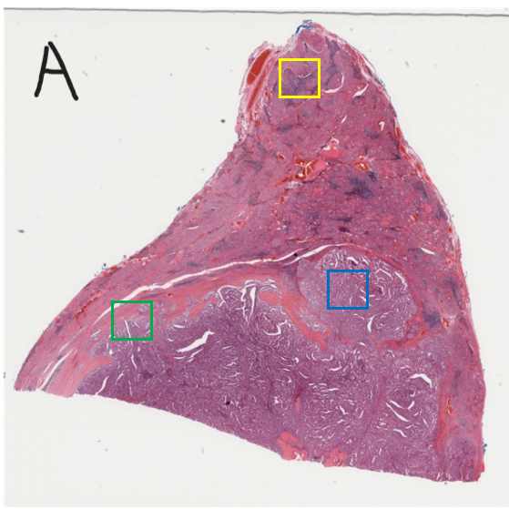
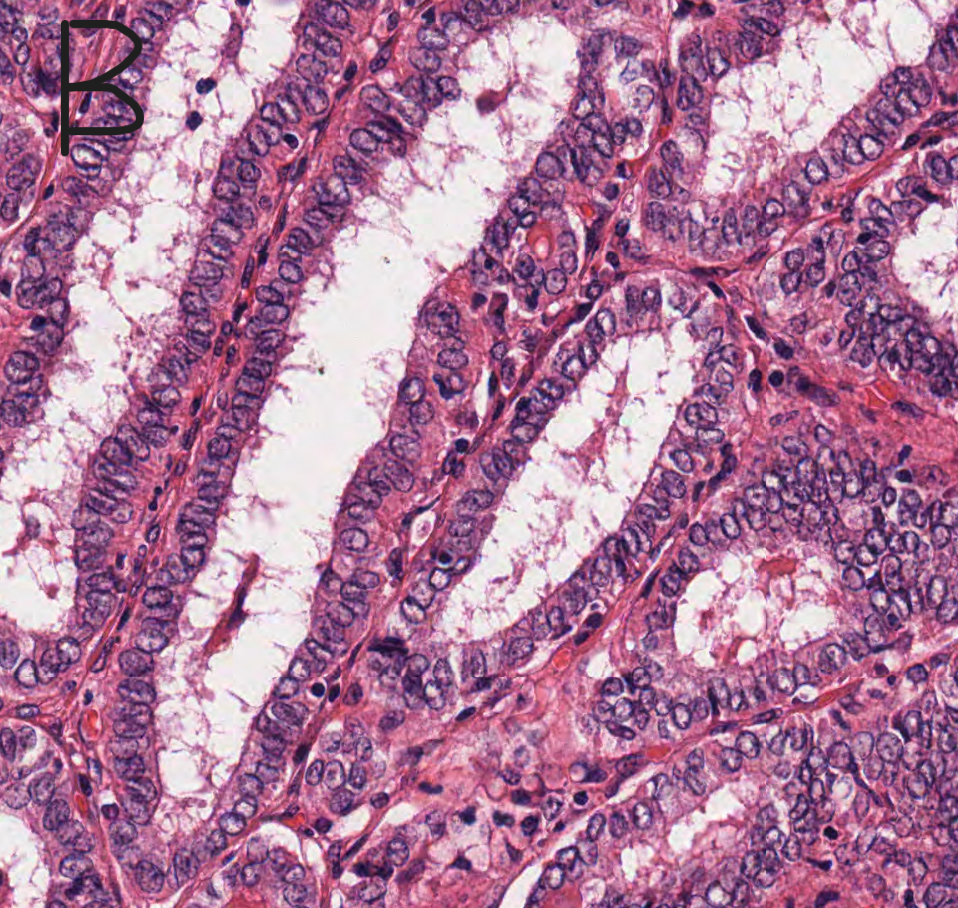
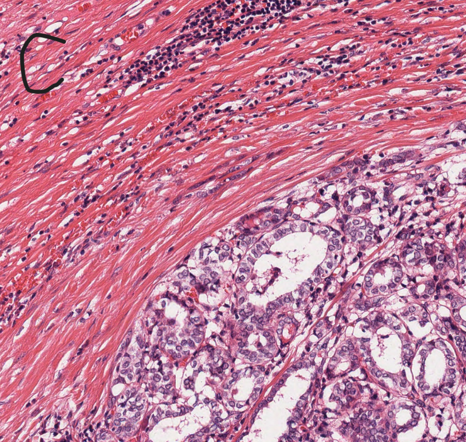
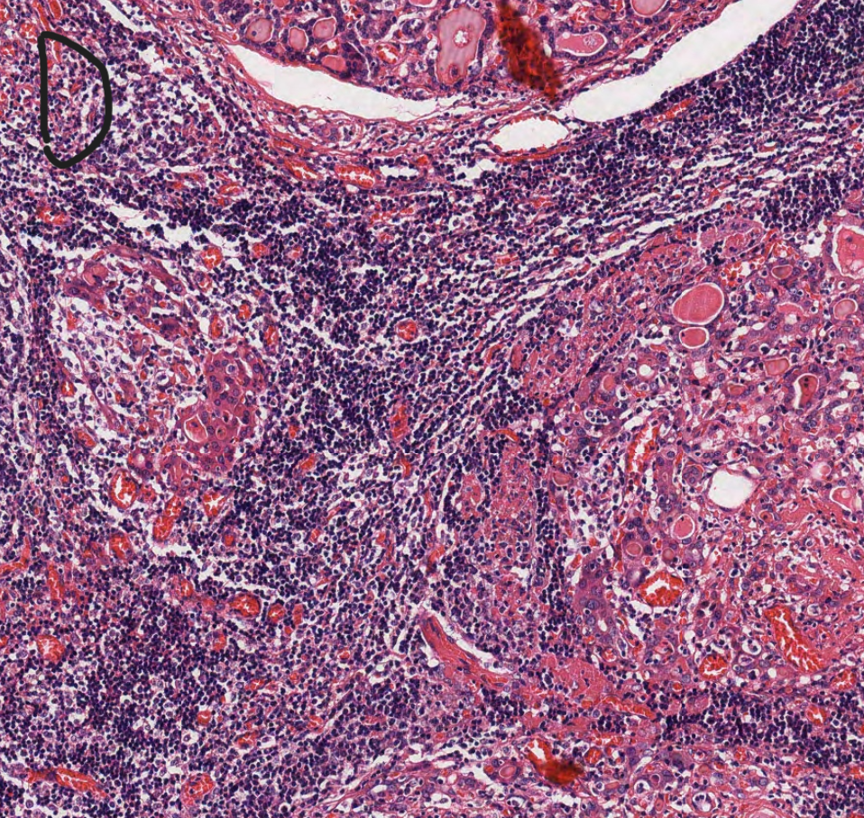

[泌尿器病理学]
【問】精巣病変に関する次の記述の内、正しいものはどれか？ （23 問1）
(1) セミノーマは、細胞質がグリコーゲンに富み、核は円形で明瞭な核小体を 1 個有する。
(2) セミノーマは、GCNIS (Germ cell neoplasia in situ) 由来の胚細胞腫瘍である。
(3) セミノーマは、化学療法に対する感受性が高い。
(4) 2 種類以上の組織型をもつ胚細胞腫瘍で、一つがセミノーマである場合は、混合型非セミノーマ性胚細胞腫瘍と診断されない。
(5) 胎児性癌では、AFP がほぼ全例で上昇する。
a. 全て正しい b. 1.2.3 c. 1.2.5 d. 1.3.5 e. 3.4.5
解説
【類題】精巣病変に関する次の記述の内、正しいものはどれか？ （22 問1）
(1) セミノーマは、均一な淡明細胞の敷石状増殖からなり、間質には種々の程度にリンパ球や組織球の浸潤を伴う。
(2) セミノーマは、その名称は-omaで終わるが、悪性腫瘍に分類される。
(3) 奇形腫と胎児性癌は思春期前型と思春期後型に区別されている。
(4) β-hCGは、卵黄嚢腫瘍の特徴的な腫瘍マーカーである。
(5) 胚細胞腫瘍は Germ cell neoplasia in situ (GCNIS) 由来か否かでGCNIS 由来胚細胞腫瘍かGCNIS 非関連胚細胞腫瘍に2分される。
a) 全て正しい b) 1.2.3 c) 1.2.5 d) 1.3.5 e) 3.4.5
解説
【類題】精巣病変に関する次の記述の内、正しいものはどれか？ （21 問1）
(1) セミノーマは、その細胞質はグリコーゲンに富み、核は円形で通常一個の明瞭な核小体を有する。また、細胞境界は明瞭である。
(2) Leydig 細胞腫は、性索問質腫瘍の一種である。
(3) 胚細胞腫瘍は Germ cell neoplasia in situ (GCNIS)由来か否かでGCNIS由来胚細胞腫瘍かGCNIS 非関連胚細胞腫瘍に2分される。
(4) 精巣腫瘍のうち胚細胞腫瘍は半分程度を占める。
(5) GCNIS の見られる精細管でも、通常精子形成は認められる。
a) 全て正しい b) 1.2.3 c) 1.2.5 d) 1.3.5 e) 3.4.5
【問】前立腺病変に関する次の記述の内、正しいものはどれか？ （23 問2）
(1) 結節性過形成/良性前立腺過形成では、腺上皮だけでなく間質成分も増生している。
(2) 前立腺癌の他臓器転移先としては、肺が最も多い。
(3) 前立腺癌の腺管は、通常基底細胞を欠如しており、この点が免疫染色での鑑別に用いられている。
(4) 前立腺癌の 9 割以上は前立腺導管腺癌である。
(5) 前立腺癌の悪性度評価には、Gleason 分類および WHO グレードグループ分類が使用される。
a. 全て正しい b. 1.2.3 c. 1.2.5 d. 1.3.5 e. 3.4.5
【類題】前立腺病変に関する次の記述の内、正しいものはどれか？ （22 問2）
(1) 前立腺腺癌は腺の内腔側を構成する分泌細胞を起源とする浸潤性上皮性腫瘍である。
(2) 前立腺癌に見られ、良性腺管には見られない所見の一つに、神経周囲浸潤がある。
(3) 前立腺癌の悪性度評価に Gleason 分類が用いられている。
(4) 前立腺癌腺管は基底細胞を欠如しているので、この形質は免疫染色を用いた癌病理診断に利用されている。
(5) 前立腺導管由来の癌として導管腺癌があるが、その頻度は腺房腺癌と比較すると低い。
a) 全て正しい b) 1.2.3 c) 1.2.5 d) 1.3.5 e) 3.4.5
【類題】前立腺病変に関する次の記述の内、正しいものはどれか？ （21 問2）
(1) 前立腺癌の9割以上は前立腺導管腺癌である。
(2) 前立腺癌は、通常、肉眼的に癌の周囲との境界は明瞭である。
(3) 前立腺癌の悪性度評価にWHOグレードグループ分類というものがあり、これは、Gleason スコア値を予後に従ってグループ化したものである。
(4) 前立腺癌の他臓器転移としては骨転移が最も多い。
(5) 前立腺癌か否かの病理組織学的診断において、神経周囲浸潤は癌に特異的な所見と言える。
a) 全て正しい b) 1.2.3 c) 1.2.5 d) 1.3.5 e) 3.4.5
【問】膀胱病変に関する次の記述の内、正しいものはどれか？ （23 問3）
(1) 生検での尿路上皮癌の固有筋層浸潤の有無判定は、その後の治療方針を決定する上で重要である。
(2) ブルン巣は尿路上皮の悪性変化である。
(3) BCG 関連膀胱炎では類上皮細胞を含む肉芽腫性炎症が見られることがある。
(4) 尿路上皮内癌は通常、乳頭状に増殖する。
(5) 尿膜管癌の大多数は腺癌である。
a. 全て正しい b. 1.2.3 c. 1.2.5 d. 1.3.5 e. 3.4.5
【類題】膀胱病変に関する次の記述の内、正しいものはどれか？ （22 問3）
(1) ポリープ状膀胱炎では、多くの場合類上皮(細胞) 肉芽腫が認められる。
(2) 癌が上皮下結合組織に浸潤している場合、通常、膀胱全摘術や全身化学療法などの集学的治療が必要となる。
(3) 非浸潤性乳頭状尿路上皮癌は低異型度、高異型度に2分される。
(4) 增殖性膀胱炎の型の一つにブルン細胞巣がある。
(5) 尿膜管から発生する膀胱腺癌は、通常膀胱頂部/前壁に主座がある。
a) 全て正しい b) 1.2.3 c) 1.2.5 d) 1.3.5 e) 3.4.5
【類題】膀胱病変に関する次の記述の内、正しいものはどれか？ （21 問3）
(1) 膀胱の悪性上皮腫瘍の9割以上は尿路上皮癌である。
(2) 低異型度非浸潤性乳頭状尿路上皮癌では通常傘細胞は消失している。
(3) 尿膜管から発生する膀胱腺癌は、通常膀胱頂部/前壁に主座がある。
(4) ブルン細胞巣は浸潤を示す所見である。
(5) 内反性尿路上皮乳頭腫は、通常その表層部は正常の尿路上皮に被覆される。
a) 全て正しい b) 1.2.3 c) 1.2.5 d) 1.3.5 e) 3.4.5
【問】精巣・陰囊病変に関する次の記述の内、正しいものはどれか？ （23 問4）
(1) 停留精巣、放射線照射、癌化学療法は、精巣萎縮の原因となりうる。
(2) 精巣捻転は精索を軸として捻転し、精巣の血流障害を引き起こす。
(3) 精巣鞘膜腔に漿液が貯留した状態は陰嚢水腫と呼ばれ、この鞘膜腔を直接裏打ちするのは線維芽細胞である。
(4) Sertoli 細胞腫における Reinke 結晶は診断的に有用である。
(5) Sertoli 細胞単独症候群は精子形成障害の一型である。
a. 全て正しい b. 1.2.3 c. 1.2.5 d. 1.3.5 e. 3.4.5
【類題】精巣、陰囊病変に関する次の記述の内、正しいものはどれか？ （22 問4）
(1) 停留精巣は精巣萎縮の原因となる。
(2) Sertoli 細胞単独症候群は男性不妊症患者に見られることがある。
(3) 陰嚢水腫は精巣鞘膜腔に漿液の貯留した状態である。
(4) 精巣捻転は成人男性に生じやすい疾患である。
(5) 陰嚢血腫は外傷に由来するものは稀である。
a) 全て正しい b) 1.2.3 c) 1.2.5 d) 1.3.5 e) 3.4.5
【問】外陰部尖圭コンジローマと関連するウイルスはどれか？一つ選べ。 （21 問4）
(a) EBV
(b) HPV
(c) HCV
(d) HHV8
(e) HBV
[軟部腫瘍病理学]
【問】軟部腫瘍に関する次の記述の内、正しいものはどれか？ （23 問5）
(1) 血管肉腫では放射線誘発例がある。
(2) 顆粒細胞腫では、上皮の偽上皮腫様過形成により扁平上皮癌との鑑別が必要なことがある。
(3) 悪性末梢神経鞘腫瘍は S-100 protein SOX10 が部分的に陽性となることが多い。
(4) グロームス腫瘍は通常、αSMA と desmin の両方が陽性となる。
(5) 神経線維腫が多発する場合、神経線維腫症 2 型に関連する可能性が高い。
a. 全て正しい b. 1.2.3 c. 1.2.5 d. 1.3.5 e. 3.4.5
【類題】軟部腫瘍に関する次の記述の内、正しいものはどれか？ （22 問5）
(1) 神経鞘腫では、しばしば核の柵状配列 (nuclear palisading)が見られる。
(2) 顆粒細胞腫は、好酸性顆粒状細胞質を有する。
(3) Kaposi 肉腫は、HHV8の感染を基盤として生じる病変である。
(4) 神経線維腫では、濃染性でコンマ状に(波打つ様に) 屈曲した核を有する小型の紡錘形細胞が、繊細な膠原線維や粘液腫状基質と共に特定の配列を示さずに増殖する。
(5) グロームス腫瘍は、濃染性の類円形小型核と淡好酸性細胞質を有するほぼ均一で小型の上皮様細胞が、薄壁性小血管を取り囲む様に、シート状・索状に配列増殖する。
a) 全て正しい b) 1.2.3 c) 1.2.5 d) 1.3.5 e) 3.4.5
【類題】軟部腫瘍に関する次の記述の内、正しいものはどれか？ （21 問5）
(1) グロームス腫瘍は、皮膚などの血管末端部の動静脈吻合部に相当するグロームス小体の構成細胞の特徴を示す細胞からなる良性腫瘍である。
(2) Kaposi 肉腫は、免疫組織化学的検索で血管内皮マーカーが陽性となる。
(3) 神経鞘腫は、Antoni A領域、Antoni B領域が混合して見られる。
(4) neurofibroma は時に多発し、この場合は、遺伝性疾患である神経線維腫症1型に関連する腫瘍であることがまずは疑われる。
(5) 滑膜肉腫は、分化傾向を含めて考えても滑膜との直接的な関連性はないと言える。
a) 全て正しい b) 1.2.3 c) 1.2.5 d) 1.3.5 e) 3.4.5
【問】軟部腫瘍に関する次の記述の内、正しいものはどれか？ （23 問6）
(1) 滑膜肉腫では SS18::SSX1 または SS18::SSX2 融合遺伝子がみられることが多い。
(2) 類上皮肉腫では、SMARCB1/INI1 の核発現が消失することが多い。
(3) 結節性筋膜炎は自然退縮することはない。
(4) 胞巣状軟部肉腫では TFE3 が細胞質に発現する。
(5) 脱分化型脂肪肉腫では、MDM2 や CDK4 遺伝子の増幅が見られる。
a. 全て正しい b. 1.2.3 c. 1.2.5 d. 1.3.5 e. 3.4.5
【類題】軟部腫瘍に関する次の記述の内、正しいものはどれか？ （22 問6）
(1) 脱分化型脂肪肉腫は、HE標本上、脂肪への分化を示さない、高細胞密度、高異型度の肉腫である。
(2) 乳幼児型線維肉腫は特異的融合遺伝子ETV6-NTRK3 を持ち、予後も良好なことから、成人型線維肉腫とは別の腫瘍として扱われる。
(3) 隆起性皮膚線維肉腫は、真皮を中心としてほぼ均一な線維芽細胞様紡錘形細胞が繊細な膠原線維を介在して渦巻き状あるいは花筵状 (storiform
pattern)に密に配列増殖し、しばしば皮下に向かって進展する。
(4) 結節性筋膜炎は、しばしば急速に増大する結節状の病変で、自覚してから受診するまでの期間が数週から数ヶ月と短いのも特徴である。
(5) 滑膜肉腫は、SS18(別名SYT)遺伝子と、SSX1/SSX2 遺伝子との融合遺伝子形成が見られるものが多い。
a) 全て正しい b) 1.2.3 c) 1.2.5 d) 1.3.5 e) 3.4.5
【類題】軟部腫瘍に関する次の記述の内、正しいものはどれか？ （21 問6）
(1) 滑膜肉腫は、単相線維型と、その中に腺癌相当の異型立方円柱上皮の胞巣や管状構造を伴う二相型がある。
(2) 結節性筋膜炎は、しばしば急速に増大する結節状の病変で、自覚してから受診するまでの期間が数週から数ヶ月と短いのも特徴である。
(3) 隆起性皮膚線維肉腫は、局所再発率が高く、また、極稀に転移を来すことがある。
(4) 脫分化型脂肪肉腫ではMDM2 遺伝子やCDK4遺伝子の増幅が見られる。
(5) 脂肪腫は腫瘍の核出術が選択されることが多い。
a) 全て正しい b) 1.2.3 c) 1.2.5 d) 1.3.5 e) 3.4.5
【問】軟部腫瘍に関する次の記述の内、正しいものはどれか？ （23 問7）
(1) 異型脂肪腫様腫瘍では、MDM2 や CDK4 遺伝子の増幅が見られる。
(2) カポジ肉腫はヒトヘルペスウイルス 1 型(HHV1) (=単純ヘルペスウイルス 1 型)感染により生じる。
(3) 成人型線維肉腫では、杉綾模様ないしニシンの骨様の構造 (herring-bone pattern) がしばしば認められる。
(4) 神経鞘腫では、腫瘍細胞である紡錘形細胞が束状に密に配列増殖している領域(Antoni B)と、浮腫状あるいは粘液腫状の豊富な基質を背景に腫瘍細胞が疎に分布している領域(Antoni
A)の混在が見られる。
(5) 粘液線維肉腫では、樹枝状に発達した血管網がしばしば認められる。
a. 全て正しい b. 1.2.3 c. 1.2.5 d. 1.3.5 e. 3.4.5
【類題】軟部腫瘍に関する次の記述の内、正しいものはどれか？ （22 問7）
(1) 悪性末梢神経鞘腫瘍は坐骨神経に好発する。
(2) 放射線誘発例やリンパ節郭清を伴う乳癌根治手術後の上肢のリンパ浮腫に続発する二次性血管肉腫がある。
(3) 異型脂肪腫様腫瘍と高分化型脂肪肉腫は基本的に同様な病理組織像を呈する。
(4) 類上皮肉腫では多くの症例でSMARCB1/INI1 のタンパク質発現が上昇する。
(5) 炎症性筋線維芽細胞性腫瘍では NAB2-STAT6 融合遺伝子形成が見られるため、STAT6の核内発現が見られる。
a) 全て正しい b) 1.2.3 c) 1.2.5 d) 1.3.5 e) 3.4.5
【類題】軟部腫瘍に関する次の記述の内、正しいものはどれか？ （21 問7）
(1) 孤在性線維性腫瘍は NAB2-STAT6融合遺伝子形成が見られるため、STAT6の核内発現が免疫組織化学的検索で検出される。
(2) 炎症性筋線維芽細胞性腫瘍は、免疫染色でALK の過剰発現をしばしば認める。
(3) 成人型線維肉腫では多少とも杉綾模様ないし錬の骨様の構造 (herring-bone pattern) が見られる。
(4) 血管肉腫は悪性に分類されるが、術後の局所再発が見られることはない。
(5) 悪性末梢神経鞘腫瘍は、神経線維腫症2型に関連して発生するものが大半である。
a) 全て正しい b) 1.2.3 c) 1.2.5 d) 1.3.5 e) 3.4.5
【問】軟部腫瘍に関する次の記述の内、正しいものはどれか？ （23 問8）
(1) 平滑筋肉腫では両切りタバコ状の核を有する平滑筋細胞様の異型紡錘形細胞が増生している。
(2) 花筵状の増殖パターンとは、分岐する血管の走行に寄り添う様な腫瘍細胞配列のことである。
(3) 胞巣状軟部肉腫では、PAS 陽性の細胞質内結晶構造物を認めることがある。
(4) 良悪性中間群に分類される腫瘍は転移を示さない。
(5) 乳幼児型線維肉腫は ETV6-NTRK3 融合遺伝子を有し、予後が良好である。
a. 全て正しい b. 1.2.3 c. 1.2.5 d. 1.3.5 e. 3.4.5
【類題】軟部腫瘍で観察される特徴的な細胞配列とその説明として、正しい組み合わせはどれか？ （22 問8）
(1) 魚骨様 - 魚の背骨のような「く」の字の腫瘍細胞配列
(2) 血管周皮腫樣 - 分岐する血管の走行に寄り添う様な腫瘍細胞配列
(3) びまん性・シート状 - 円形細胞腫瘍などが一様かつ単調に広がる状態を指す
(4) 網目状 - 上皮樣細胞や紡錘形細胞が豊富な粘液基質や線維性基質を背景に交差、網状に配列する状態を指す
(5) 花冠状 - 紡錘形細胞集団の放射状の延び出しや渦状配列が組みあわさったパターン
a) 全て正しい b) 1.2.3 c) 1.2.5 d) 1.3.5 e) 3.4.5
[腎臓病理学]
【問】腎臓の糸球体病変の光顕像に関する次の組み合わせのうち、誤っているものはどれか？一つ選べ。 （23 問9）
a. 微小変化型ネフローゼ症候群 - 明らかな病変はない
b. IgA 腎症 - メサンギウム細胞増多、メサンギウム基質増加
c. 溶連菌感染後急性糸球体腎炎- 富核、血管内腔の狭小化
d. 膜性腎症 - PAM 染色でスパイク形成
e. 膜性増殖性糸球体腎炎 - 巣状、分節性の硬化病変
解説
解答：e
a. 微小変化型ネフローゼ症候群は光顕像で明らかな異常を認めない。
b．IgA腎症はメサンギウム細胞増多・メサンギウム基質増加を認める。
c. 溶連菌感染後急性糸球体腎炎は、白血球浸潤による富核、血管内腔の狭小化を認める。
d. 膜性腎症は、PAS染色でGBMの肥厚、PAM染色でスパイクを認める。
e. 膜性増殖性糸球体腎炎は、メサンギウム増殖とGBMの二重化を認める。
【問】腎臓の糸球体病変の電顕所見に関する次の組み合わせのうち、誤っているものはどれか？一つ選べ。 （23 問10）
a. 微小変化型ネフローゼ症候群 - ポドサイトの足突起がびまん性に消失
b. IgA 腎症 - メサンギウムに電子密度の高い沈着物
c. 溶連菌感染後急性糸球体腎炎 - 上皮下に hump
d. 膜性腎症 - 高電子密度の沈着物が上皮下や GBM 内に横並びに沈着
e. 膜性増殖性糸球体腎炎-1 型では上皮下沈着物が主体
【問】腎臓の糸球体病変の蛍光抗体法所見に関する次の組み合わせのうち、誤っているものはどれか？一つ選べ。 （23 問11）
a. 巣状分節性糸球体硬化症 - IgM, C3 が硬化部/硝子様部に沈着
b. IgA 腎症 - IgA がメサンギウムに沈着
c. 溶連菌感染後急性糸球体腎炎-明らかな病変はない
d. 膜性腎症 - IgG が GBM に沿って顆粒状に沈着
e. C3 腎症 - C3 の内皮下沈着
【問】腎病変に関する次の組み合わせのうち、誤っているものはどれか？一つ選べ。 （23 問12）
a. 微小変化型ネフローゼ症候群 - メサンギウム間入
b. 糖尿病性腎症 - Kimmelstiel-Wilson 結節
c. 糖尿病性腎症 - フィブリンキャップ
d. ANCA 関連血管炎 - 壊死性半月体形成性糸球体腎炎
e. ループス腎炎 - ワイヤーループ病変
【問】次の腎病変の中で、糸球体基底膜の二重化を認めるのはどれか？一つ選べ。 （22 問9）
(a) IgA腎症
(b) 巣状分節性糸球体硬化症
(c) 膜性增殖性糸球体腎炎
(d) 膜性腎症
(e) ANCA関連血管炎
【類題】溶連菌感染後急性糸球体腎炎で見られる所見として、正しいものはどれか？ （22 問10）
(1) 富核
(2) フィブリンキャップ
(3) hump
(4) メサンギウム細胞增多
(5) 管内增殖性糸球体腎炎
a) 全て正しい b) 1.2.3 c) 1.2.5 d) 1.3.5 e) 3.4.5
【類題】抗原抗体複合体が糸球体基底膜の上皮下に沈着し、PAM染色でスパイク (spike)を認めるのはどれか？一つ選べ。 （21 問8）
(a) 膜性增殖性糸球体腎炎
(b) IgA腎症
(c) 巢状分節性糸球体硬化症
(d) 膜性腎症
(e) 管内增殖性糸球体腎炎
【類題】次の腎病変の中で、Kimmelstiel-Wilson 結節が認められるのはどれか？一つ選べ。 （22 問11, 21 問9）
(a) 巣状分節性糸球体硬化症
(b) 微小変化型ネフローゼ症候群
(c) 半月体形成性糸球体腎炎
(d) ループス腎炎
(e) 糖尿病性腎症
【類題】次の腎病変の中で、ワイヤーループ病変が認められるのはどれか？一つ選べ。 （22 問12）
(a) 微小変化型ネフローゼ症候群
(b) ループス腎炎
(c) 糖尿病性腎症
(d) 半月体形成性糸球体腎炎
(e) 巣状分節性糸球体硬化症
【問】70 歳代男性の腎病変の H&E 写真を示す(図を参照せよ)。B は A の一部の拡大である。この腫瘍に関して一般的に知られている次の記述の内、正しいものはどれか？ 問 33 （23 問33）
(1) 細胞質にグリコーゲン、脂肪を多く含んでいる。
(2) 癌抑制遺伝子 VHL の遺伝子異常を示すことが多い。
(3) VEGF、GLUT1、EPO の転写亢進が見られることが多い。
(4) CA9、CD10 は免疫染色で陽性となる可能性が高いマーカーである。
(5) 割面は、黄色調を呈することが多い。
a. 全て正しい b. 1.2.3 c. 1.2.5 d. 1.3.5 e. 3.4.5
【類題】淡明細胞型腎細胞癌に関する次の記述の内、正しいものはどれか？ （22 問13）
(1) 黄色調を呈することが多い。
(2) グリコーゲン、脂肪滴を含む淡明細胞質を有する腫瘍細胞の胞巣状構築からなる。
(3) 癌抑制遺伝子VHLの遺伝子異常を示すことが多い。
(4) 核異型度分類(WHO/ISUP 分類)は通常用いられない。
(5) 高酸素状態で誘導される遺伝子 VEGFやEPOの転写亢進が見られる。
a) 全て正しい b. 1.2.3 c. 1.2.5 d. 1.3.5 e. 3.4.5
【類題】淡明細胞型腎細胞癌に関する次の記述の内、正しいものはどれか？ （21 問10）
(1) 腎細胞癌の多くは淡明細胞型腎細胞癌である。
(2) 境界明瞭で黄色調である。
(3) グリコーゲン、脂肪滴を含む淡明細胞質を有する腫瘍細胞の胞巣状構築からなる。
(4) VHLの異常があり、これにより、VEGFやEPOなどの転写が亢進している。
(5) 類洞状血管網が介在する。
a) 全て正しい b) 1.2.3 c) 1.2.5 d) 1.3.5 e) 3.4.5
[血液病理学]
【問】骨髄検査に関する次の記述の内、正しいものはどれか？ （23 問13）
(1) 顆粒球系の分化・成熟過程は、骨髄芽球→前骨髄球→後骨髄球→骨髄球→杆状核球→成熟球の順である。
(2) M/E 比(Myeloid/Erythroid 比)は、骨髄における巨核球系細胞と赤芽球系細胞の比率を示したものである。
(3) MPO(ミエロペルオキシダーゼ)は顆粒球系のマーカーである。
(4) 年齢により骨髄造血密度は変化する。
(5) クロット標本とは、抗凝固剤を加えずに採取した骨髄液が自然に凝固した血餅をホルマリン固定して、標本化したものである。
a. 全て正しい b. 1.2.3 c. 1.2.5 d. 1.3.5 e. 3.4.5
【類題】骨髄検査に関する次の記述の内、正しいものはどれか？ （22 問14）
(1) 赤芽球系の分化・成熟過程は、前赤芽球->好塩基性赤芽球->多染性赤芽球->正染性赤芽球の順である。
(2) 年齢により骨髄の cellularity は変化する。
(3) 幼若な単核顆粒球が集積しやすいのは、骨梁近傍ではなく骨梁中心域の造血巣である。
(4) Glycophorin Cは巨核球系のマーカーである。
(5) 骨髄のクロット標本と生検標本を比較すると、後者の方がより組織構築像の観察に適しており、また、検索範囲も広いが、より生体への侵襲度が高い。
a) 全て正しい b) 1.2.3 c) 1.2.5 d) 1.3.5 e) 3.4.5
【類題】骨髄検査に関する次の記述の内、正しいものはどれか？ （21 問11）
(1) 骨髄のクロット標本と生検標本を比較すると、後者の方がより組織構築像の観察に適しており、また、検索範囲も広いが、より生体への侵襲度が高い。
(2) 成熟好中球の分葉数は通常4~6である。
(3) 正常では、赤芽球島は骨梁周囲にはほとんど見られない。
(4) 骨髓造血細胞密度は新生児に比べると成人の方が高い。
(5) 骨髓造血巣のナフトール ASD クロロアセテートエステラーゼ染色により M/E比の上昇、低下が判断できる。
a) 全て正しい b) 1.2.3 c) 1.2.5 d) 1.3.5 e) 3.4.5
【問】貧血に関する次の組み合わせのうち、誤っているものはどれか？一つ選べ。 （23 問14）
a. 自己免疫性溶血性貧血 - 赤血球凝集
b. パルボウイルス B19 感染による急性赤芽球癆 - 汎血球減少
c. 鉄芽球性貧血 - 環状鉄芽球
d. 巨赤芽球性貧血 - ビタミン B12 欠乏や葉酸欠乏
e. サラセミア - 巨大前赤芽球
【類題】貧血に関する次の組み合わせのうち、誤っているものはどれか？一つ選べ。 （22 問15）
(a) 遺伝性球状赤血球症 - 溶血性貧血
(b) パルボウイルス B19 感染による急性赤芽球癆 - 巨赤芽球性变化
(c) サラセミア - 標的赤血球
(d) 再生不良性貧血 - 赤芽球島の形成が見られない
(e) 巨赤芽球 - 核内封入体
【類題】貧血に関する次の組み合わせのうち、誤っているものはどれか？一つ選べ。 （21 問12）
(a) 再生不良性貧血 - 汎血球減少症
(b) パルボウイルス B19 感染による急性赤芽球 - 巨大前赤芽球
(c) 巨赤芽球性貧血 - 核と細胞質の成熟乖離
(d) サラセミア - 標的赤血球
(e) 自己免疫性溶血性貧血 - 連銭形成
【問】骨髄異形成腫瘍(骨髄異形成症候群)(MDS)に関する次の記述の内、正しいものはどれか？ （23 問15）
(1) SF3B1 変異を伴う MDS では鉄の利用障害により環状鉄芽球が出現する。
(2) 微小巨核球や分離円形多核巨核球は診断的意義がある。
(3) 多くの症例は血球増多に関連した症状で発症する。
(4) 年齢の中央値はおおよそ 30 歳である。
(5) 骨髄の無効造血が見られる。
a. 全て正しい b. 1.2.3 c. 1.2.5 d. 1.3.5 e. 3.4.5
【類題】骨髄異形成腫瘍に関する次の記述の内、正しいものはどれか？ （22 問16）
(1) 骨髄の無効造血は見られない。
(2) 5q欠失を伴うMDS 症例では、骨髄は低形成を示す。
(3) 芽球増多を伴うMDSでは、CD34 免疫染色が芽球の分布を見るのに適している。
(4) SF3B1 変異を伴うMDSでは環状鉄芽球が赤芽球の15%以上を占める。
(5) 巨核球系の形態異常では、微小巨核球や分離円形多核巨核球が診断的な価値がある。
a) 全て正しい b) 1.2.3 c) 1.2.5 d) 1.3.5 e) 3.4.5
【類題】骨髄異形成症候群に関する次の記述の内、正しいものはどれか？ （21 問13）
(1) 巨核球系の形態異常では、微小巨核球や分離円形多核巨核球が診断的な価値がある。
(2) 多くの症例は血球減少に関連した症状で発症する。
(3) 環状鉄芽球を伴う骨髄異形成症候群で認められる環状鉄芽球では、鉄が核膜に異常沈着している。
(4) 若年者に多い疾患である。
(5) 骨髄は多くの場合過形成ないし、正形性を示す。
a) 全て正しい b) 1.2.3 c) 1.2.5 d) 1.3.5 e) 3.4.5
【問】急性骨髄性白血病、骨髓增殖性腫瘍に関する次の記述の内、正しいものはどれか？ （23 問16）
(1) APL with PML-RARA では ATRA による分化誘導療法が有効である。
(2) BCR-ABL1 陽性慢性骨髄性白血病の慢性期では、特定の成熟段階の骨髄系細胞の増加が見られる。
(3) AML-M4 では単球系が非特異的エステラーゼ陽性、好中球系が N-ASD-CAE 陽性となる。
(4) JAK2 V617F 遺伝子変異は、真性赤血球増加症では高頻度に認められるが、本態性血小板血症、原発性骨髄線維症ではほとんど認められない。
(5) 原発性骨髄線維症では、末梢血に涙滴赤血球や大小不同が見られる。
a. 全て正しい b. 1.2.3 c. 1.2.5 d. 1.3.5 e. 3.4.5
【類題】急性骨髄性白血病、骨髓增殖性腫瘍に関する次の記述の内、正しいものはどれか？ （22 問17）
(1) APL with PML-RARAでは、成熟球への分化の乏しい前骨髄球が著増している。
(2) 急性前骨髓球性白血病ではアウエル小体が見られやすい。
(3) BCR-ABL1 陽性慢性骨髓性白血病で急性転化を来すと芽球が増加する。
(4) 真性赤血球増加症では 95%以上の症例で JAK2 V617F 遺伝子異常が見られる。
(5) 原発性骨髄線維症の線維化期には、骨髄の線維化が見られ、しばしば骨硬化症も見られる。
a) 全て正しい b) 1.2.3 c) 1.2.5 d) 1.3.5 e) 3.4.5
【類題】急性骨髄性白血病に関する次の記述の内、正しいものはどれか？ （21 問14）
(1) 骨髄系幹細胞の腫瘍化により、成熟球への分化の乏しい骨髄球の芽球が骨髄、末梢血、またはその他の組織に浸潤、増殖する疾患である。
(2) 急性前骨髓球性白血病ではほとんどの症例でキメラ遺伝子 PML-RARA が認められる。
(3) 急性前骨髓球性白血病では播種性血管内凝固症候群を合併しやすい。
(4) 急性単芽球性・単球性白血病ではファゴット細胞が見られやすい。
(5) WHO 分類は白血病細胞の形態学的、細胞化学的な特徴に基づいた診断であり、FAB 分類は、これに分子生物学的特徴も加えたものである。
a) 全て正しい b) 1.2.3 c) 1.2.5 d) 1.3.5 e) 3.4.5
[皮膚病理学]
【問】表皮の海綿状態を特徴とする炎症性皮膚疾患はどれか？ （23 問35）
(1) イド反応
(2) 刺激性接触性皮膚炎
(3) 脂漏性皮膚炎
(4) 多形紅斑
(5) 扁平苔癬
a. 全て正しい b. 1.2.3 c. 1.2.5 d. 1.3.5 e. 3.4.5
解説
解答：b
1. イド反応（自家感作性皮膚炎）は海綿状皮膚炎。
2. 刺激性接触性皮膚炎は海綿状皮膚炎。
3. 脂漏性皮膚炎は海綿状皮膚炎。
4. 多形紅斑は境界型皮膚炎。
5. 扁平苔癬は境界型皮膚炎。
【問】尋常性乾癬の病理組織所見について、正しいものはどれか？ （23 問36）
(1) 表皮角質層の錯角化
(2) 表皮角質層下の微小膿瘍
(3) 表皮顆粒層の肥厚
(4) 真皮浅層の好酸球浸潤
(5) 真皮乳頭の毛細血管拡張
a. 全て正しい b. 1.2.3 c. 1.2.5 d. 1.3.5 e. 3.4.5
解説
解答：c
1. 乾癬は角化異常（錯覚化）を引き起こす。
2. 乾癬はムンロー微小膿瘍（角質層）・コゴイ海綿状嚢胞（顆粒層から有棘層）を認める。
3. 乾癬は角化異常（顆粒層低形成）を引き起こす。
4. 好酸球浸潤は海綿状皮膚炎・水疱性皮膚炎で見られる。
5. 乾癬は真皮乳頭で毛細血管拡張が起き、容易に出血する（アウシュピッツ現象）。
【問】水疱性類天疱瘡に関する次の記述のうち、正しいものはどれか？ （23 問37）
a. 小児に好発する。
b. 自己抗体の主な標的はデスモグレイン 1 である。
c. 基底層直上で表皮が離開し、弛緩性水疱が形成される。
d. 水疱内やその周囲に好酸球の浸潤を認めることが多い。
e. 蛍光抗体法では真皮側に IgG の沈着を認める。
解説
解答：d
a. 水疱性類天疱瘡は主に70代・80代で見られる。
b. デスモグレイン1はより表層に分布し、落葉性天疱瘡で自己抗体の標的となる。
c. 弛緩性水疱：天疱瘡で見られる、基底層直上または角質層下の薄く破れやすい水疱。
d. 類天疱瘡では水疱内・水疱周囲に好酸球浸潤を認める。
e. IgGの沈着は、水疱性類天疱瘡では表皮側に認められる。
【問】皮膚腫瘍に関する次の記述のうち、正しいものはどれか？ （23 問38）
(1) 脂漏性角化症では、メラニン沈着を伴うことがある。
(2) 日光角化症では、偽角質嚢腫がしばしばみられる。
(3) 基底細胞癌では、腫瘍細胞が柵状配列を示すことがある。
(4) 菌状息肉症は真菌感染を契機に発生する皮膚リンパ腫である。
(5) 異形成母斑はメラノーマに進展することがある。
a. 全て正しい b. 1.2.3 c. 1.2.5 d. 1.3.5 e. 3.4.5
[呼吸器病理学]
【問】胸部の腫瘍性疾患に関する次の記述の内、正しいものはどれか？ （23 問25）
(1) pure GGN (ground glass nodules) で 2cm 以下のものは上皮内腺癌または微少浸潤性腺癌などが考えられる。
(2) 扁平上皮癌では PTH (parathyroid hormone)-related protein による低カルシウム血症がみられる。
(3) 小細胞癌における Azzopardi 効果とは、壊死をきたした腫瘍細胞からの DNA 沈着により血管壁が好塩基性に染色される状態を指す。
(4) 乳頭型腺癌は既存肺胞構造を置換する型で、II 型肺胞上皮細胞・クラブ細胞様の腫瘍細胞が密に増殖する。
(5) solitary fibrous tumor (孤在性線維性腫瘍)では、STAT6 の免疫染色で核が陽性となる。
a. 全て正しい b. 1.2.3 c. 1.2.5 d. 1.3.5 e. 3.4.5
解説
解答：
1. pure GGN=すりガラス状結節。2cm以内のものは腫瘍性だと異型腺腫様過形成（AAH）, 上皮内腺癌（AIS）, 微小浸潤性腺癌（MIA）が考えられる。
2. 扁平上皮癌の腫瘍随伴症候群として、PTHrPによる高Ca血症がある。
3. Azzopardi効果=壊死をきたした腫瘍細胞からのDNA沈着により血管壁が好塩基性に染色される状態。小細胞癌で見られる。
4. 置換型腺癌（上皮内腺癌）の特徴である。乳頭型腺癌では、血管を中心として腫瘍細胞が積み重なり（弾性繊維を欠く）乳頭状に増殖する。
5. solitary fibrous tumor (孤在性線維性腫瘍)では、CD34, 核STAT6陽性となる。
【類題】胸部の腫瘍性疾患に関する次の記述の内、正しいものはどれか？ （22 問28）
(1) 2020年のがん死亡数統計で部位別に分けた場合、男女合計では、肺は第一位である。
(2) 胸膜のびまん性悪性中皮腫は、臓側・壁側の胸膜表面を厚い外皮のように覆う。
(3) 過誤腫は、気管支軟骨成分が含まれることが多い。
(4) WHO分類第5版(2021)の浸潤性肺腺癌のグレード分類では、高悪性度成分の概念が取り入れられている。
(5) solitary fibrous tumor(孤在性線維性腫瘍)は、胸部X線で偶然発見されることが多い。
a) 全て正しい b) 1.2.3 c) 1.2.5 d) 1.3.5 e) 3.4.5
解説
解答：
1. 肺の癌罹患数は総数2位、男女別3位。癌死亡数は総数・男性1位、女性2位。
2. 胸膜のびまん性中皮腫は、臓側・壁側の胸膜表面を厚い外皮のように覆う悪性腫瘍である。
3. 過誤腫では2種類以上の間葉系が含まれ、とくに軟骨成分が含まれることが多い。
4. 浸潤性肺腺癌のグレード分類は、類型の成分と、高悪性度成分で判定する。
5. solitary fibrous tumor(孤在性線維性腫瘍)は、胸部X線で偶然発見されることが多い。
【類題】胸部の腫瘍性疾患に関する次の記述の内、正しいものはどれか？ （21 問25）
(1) 胸膜中皮腫で見られることのあるアスベスト小体は過去の石綿暴露を示す医学的所見であり、身体中で検出される。
(2) 胸膜のびまん性悪性中皮腫の上皮型は、HE標本上、腺癌と類似の組織像を呈することがあるが、中皮と上皮の違いは大きいため、免疫組織化学的検索を行い鑑別に役立てることは通常しない。
(3) 過誤腫は、中枢部気管支内腔に polyp 状に発育すると、気管支閉塞に伴う症状を呈することがある。
(4) 肺腺癌の間質に見られる活性化型線維芽細胞性の線維化巣は、浸潤を示唆する所見と考えられる。
(5) solitary fibrous tumor (孤在性線維性腫瘍)は、腫瘍の大部分は肺外に突出しており、細い茎を介して肺とつながっていることが多い。
a) 全て正しい b) 1.2.3 c) 1.2.5 d) 1.3.5 e) 3.4.5
解説
解答：
1. 中皮腫の多くはアスベスト曝露と関連し、アスベスト小体, 胸膜プラークが見られる。アスベスト小体はアスベスト繊維の周囲に鉄沈着を伴ったもので、線維単体と異なり肺にしか見られない。
2. 上皮様中皮腫と癌の鑑別では免疫染色（中皮腫陽性：Calretinin, CK5/6, D2-40, WT-1、肺腺癌：TTF-1, Napsin A, claudin-4, CEA）を行う。
3. 過誤腫は、中枢部気管支内腔にポリープ状に発育すると、気管支閉塞に伴う症状を呈することがある。
4. 活動性線維芽細胞増生による線維化層は浸潤所見として扱う。
5. solitary fibrous tumor (孤在性線維性腫瘍)は、腫瘍の大部分は肺外に突出しており、細い茎を介して肺とつながっている。
【問】胸部の腫瘍性疾患に関する次の記述の内、正しいものはどれか？ （23 問26）
(1) リンパ脈管筋腫症では、HMB45、SMA が免疫染色で陽性となる。
(2) 肺腺癌で ALK, ROS1, RET 融合遺伝子形成が見られやすい組織パターンとして、mucinous cribriform pattern solid signet-ring cells
がある。
(3) 小細胞癌は化学療法・放射線療法に対する感受性が低い。
(4) 肺底部の扁平上皮癌はバンコースト症候群の原因になりやすい。
(5) ある肺腺癌で、腫瘍の全体径が 20mm, 浸潤径が 3mm であり、かつ、脈管侵襲、胸膜浸潤、経気腔性伸展、腫瘍壊死は見られなかった。この場合、微小浸潤性腺癌が最も妥当な診断名と考えられる。
a. 全て正しい b. 1.2.3 c. 1.2.5 d. 1.3.5 e. 3.4.5
解説
解答：
1. リンパ脈管筋腫症では、メラノサイトマーカー（HMB45, Melan A）、平滑筋系マーカー（αSMA）が免疫染色で陽性となる。
2. ALK, ROS1転座肺癌では、solid pattern with signet-ringやmucinous cribriform patternを示しやすい。
3. 小細胞癌への化学療法・放射線療法は、初期反応が良好でも、再発しやすい。
4. 肺尖部の扁平上皮癌は、パンコースト症候群（胸郭外に進展し、腕や頸部の神経・脈管を圧迫する）を引き起こす。
5. 3cm以下の腫瘍の浸潤所見について、-なら上皮内腺癌、+(≤5mm)なら微小浸潤性腺癌, +(>5mm)なら置換型腺癌。
【類題】肺腫瘍に関する次の記述の内、正しいものはどれか？ （22 問29）
(1) パンコースト (Pancoast)症候群は、肺底部の癌で生じやすい。
(2) 2cm以内の pure GGNに対応する病理像としては、微小乳頭型腺癌が第一に考えられる。
(3) 浸潤性の置換型腺癌は非粘液性腫瘍細胞で構成されている。
(4) 浸潤性粘液性腺癌では、KRAS 変異が見られることが多い。
(5) カルチノイドでは、神経内分泌分化を示唆する類器官(organoid)、索状(trabecular)、島状(insular)、柵状 (palisading)、リボン状
(ribbon)、ロゼット様 (rosette-like)などの増殖像が見られる。
a) 全て正しい b) 1.2.3 c) 1.2.5 d) 1.3.5 e) 3.4.5
解説
解答：
1. 23 問26参照
2. 23 問25参照
3. 置換型腺癌は浸潤性非粘液性腺癌に分類される。
4. 浸潤性粘液性腺癌ではKRAS変異が高頻度に見られる。
5. カルチノイドでは、上記のような神経内分泌分化を示唆する増殖像が見られる。
【類題】肺腫瘍に関する次の記述の内、正しいものはどれか？ （21 問26）
(1) 気腔内播種性進展(tumor spread through air space: STAS)は浸潤所見の一つである。
(2) 微少浸潤性腺癌の5年生存率はおおよそ70%である。
(3) 特殊型腺癌の一つである浸潤性粘液性腺癌は、一般に、核は小型で粘液球の存在により基底部に位置している。
(4) 全ての扁平上皮癌において顕著な角化が認められる。
(5) 定型カルチノイドと異型カルチノイドの区分には、核分裂像の単位面積あたりの個数や、壊死の有無といった指標が有用である。
a) 全て正しい b) 1.2.3 c) 1.2.5 d) 1.3.5 e) 3.4.5
解説
解答：
1. 経気腔性進展（気腔内播種性進展, STAS）は浸潤所見の一つである。
2. 上皮内腺癌・微小浸潤性腺癌はほぼ5年生存率100%に近い予後である。
3. 浸潤性粘液性腺癌では、核は小型で粘液球の存在により基底部に位置している。
4. 扁平上皮癌は角化, 細胞間橋の程度に基づき角化型/非角化型に区別される。
5. 異型カルチノイドは、2mm^2あたり2-10個の核分裂像を有するか、あるいは、壊死を有するカルチノイドである。
【問】胸部の腫瘍性疾患に関する次の記述の内、正しいものはどれか？ （23 問27）
(1) 小細胞癌では壊死や核分裂像がよく観察される。
(2) 肺癌の胸膜浸潤の程度 (pl 因子)の評価では、臓側胸膜外弾性板を超えているが、臓側胸膜表面に達していない場合は、pl0 ではなく、pl1 となる。
(3) 大細胞神経内分泌癌では類器官様胞巣(organoid nesting)、索状(trabecular)、ロゼット様 (rosette-like)、柵状
(palisading)などの神経内分泌形態がみられる。
(4) 上皮内腺癌(Adenocarcinoma in situ) は 5 年生存率ほぼ 100%である。
(5) Atypical adenomatous hyperplasia(異型腺腫様過形成)は通常 5mm 以下である。
a. 全て正しい b. 1.2:3 c. 1.2.5 d. 1.3.5 e. 3.4.5
解説
解答：
1. 小細胞癌では壊死や核分裂像がよく観察される。
2. pl1=臓側胸膜外弾性板を超えているが、臓側胸膜表面に達していない。
3. 大細胞神経内分泌癌は、上記のような神経内分泌分化を示唆する組織学的特徴を持つ。
4. 21 問26参照
5. 異型腺腫様過形成（AAH）は小型の増殖性限局性病変で、通常5mm以下である。
【類題】肺腫瘍に関する次の記述の内、正しいものはどれか？ （22 問30）
(1) 上皮内腺癌(Adenocarcinoma in situ)の5年生存率はほぼ100%である。
(2) 小細胞癌は喫煙との関係が深い。
(3) atypical adenomatous hyperplasia(異型腺腫樣過形成)は、通常5mm以下の大きさである。
(4) 胸膜外弾性板を超えているが、臓側胸膜表面に達していない場合は、胸膜浸潤無し(pl0)と判定される。
(5) ALK 転座肺癌の多くでは、EGFR変異も見られる。
a) 全て正しい b) 1.2.3 c) 1.2.5 d) 1.3.5 e) 3.4.5
解説
解答：
1. 21 問26参照
2. 小細胞癌は喫煙との関係が極めて強い。
3. 23 問27参照
4. 23 問27参照
5. 肺のドライバー変異は相互排他性を持ち、どれかの変異を持つ場合、他の変異は持たない。
【類題】肺腫瘍に関する次の記述の内、正しいものはどれか？ （21 問27）
(1) 肺癌の取扱い規約第8版では、細気管支肺胞上皮癌 (BAC)という表現は使用しないことになっている。
(2) 小細胞癌ではTTF-1 陽性となることが多い。
(3) 喫煙は、扁平上皮癌の危険因子の一つとは言えない。
(4) Atypical adenomatous hyperplasia (異型腺腫様過形成)は、反応性病変の一種である。
(5) EGFR の活性化型変異は、コドン 746-750 を中心とする部位の欠失変異とL858R 変異とで、その8割以上が占められている。
a) 全て正しい b) 1.2.3 c) 1.2.5 d) 1.3.5 e) 3.4.5
解説
解答：
1.
2. 小細胞癌では神経内分泌マーカー（chromogranin A, synaptophysin, CD56）, TTF-1が陽性となる。
3.
4. 異型腺腫様過形成（AAH）は、境界が明瞭で反応性病変とは異なる。
5. EGFR変異は、746-750コドンの欠失, L858R点突然変異で80%以上を占める。
【問】胸部の腫瘍性疾患に関する次の記述の内、正しいものはどれか？ （23 問28）
(1) EGFR 遺伝子変異は、女性より男性に、また、非喫煙者より喫煙者に見られやすい。
(2) MTAP 免疫染色は上皮型と肉腫型中皮腫の鑑別に有用である。
(3) 浸潤性粘液性腺癌の免疫染色では TTF-1 や Napsin A 陰性、HNF4a 陽性となることが多い。
(4) 胸膜のびまん性悪性中皮腫では臓側と壁側胸膜を覆うような広範な増殖を示す。
(5) 肺過誤腫には軟骨成分が含まれることが多い。
a. 全て正しい b. 1.2.3 c. 1.2.5 d. 1.3.5 e. 3.4.5
解説
解答：
1. EGFR変異は、東アジア人, 女性, 非喫煙者に多く、腺癌に多い。
2. MTAPの発現消失は中皮腫で見られ、反応性中皮過形成との鑑別（腫瘍性/非腫瘍性）に用いられる。
3. 通常の腺癌で陽性になるTTF-1, Napsin Aは、浸潤性粘液性腺癌では陰性となり、HNF4αが補助マーカーとして有用である。
4. 22 問28参照
5. 22 問28参照
【類題】胸部の腫瘍性疾患に関する次の記述の内、正しいものはどれか （22 問31）
(1) チューモレットは神経内分泌細胞増殖巣の一種である。
(2) 脈管侵襲の程度の判定補助に、podoplanin (D2-40)免疫染色や Elastica Van Gieson (EVG)染色が用いられている。
(3) solid signet-ring cells (mucinous) cribriform formation の増殖バターンをもつ腺癌は、これらの増殖バターンを示さない腺癌より、ALK,
ROS1, RET転座陽性を示しやすい。
(4) 線維血管間質を取り巻くように、あるいは積み重なり、腫瘍腺管内や肺胞を乳頭状に充満するように増殖する像が優位の浸潤性腺癌は腺房型腺癌と呼ばれる。
(5) 虚脱と活性化型線維芽細胞増生巣は実質的に同じものである。
a) 全て正しい b) 1.2.3 c) 1.2.5 d) 1.3.5 e) 3.4.5
解説
解答：
1. チューモレットは上皮外に存在する神経内分泌細胞増殖巣である。
2. 血管浸潤にはEVG染色を、リンパ管浸潤にはpodoplanin(D2-40)免疫染色を用いる。
3. 23 問26参照
4. 乳頭型腺癌の特徴である。腺房型腺癌では、腫瘍細胞で囲まれた楕円形の腺管構造（または篩状腺管・融合腺管）が見られ、粘液を有する。
5. 一般には虚脱巣の一部に活動性線維芽細胞増生による浸潤巣がある。ただの虚脱巣は浸潤所見ではない。
【類題】胸部の腫瘍性疾患に関する次の記述の内、正しいものはどれか？ （21 問28）
(1) コロイド腺癌は、一般に intestinal marker 陽性と言われている。
(2) カルチノイドの背景肺に tumorlet やびまん性特発性肺神経内分泌細胞過形成[diffuse idiopathic pulmonary neuroendocrine cell
hyperplasia (DIPNECH)]が見られることがある。
(3) 非小細胞肺癌という括りの中で見ると、扁平上皮癌の頻度が最も高い。
(4) 小細胞癌は核も細胞質も均等に小さいため、そのN/C比は、大細胞癌のN/C比と大差ない。
(5) solid signet-ring cells (mucinous) cribriform formation の増殖バターンをもつ腺癌は、これらの増殖バターンを示さない腺癌より、ALK,
ROS1, RET転座陽性を示しやすい。
a) 全て正しい b) 1.2.3 c) 1.2.5 d) 1.3.5 e) 3.4.5
解説
解答：
1. コロイド腺癌ではintestinal marker陽性となることが多い。TTF-1は陰性～弱陽性。
2. カルチノイドの背景肺には、TumorletやDIPNECHが見られることがある。
3. 非小細胞癌では、腺癌が50%程度で最も多い。
4. 小細胞癌ではN/C比が高い。
5. 23 問26参照
【問】33A, 33B 共に胸部の病変です。33Aは腫瘍の全体径は2cmです。右下の像は強拡大像です。33Bは、マクロ像、H&E像(弱拡大像、強拡大像)です。A・Bの診断名として最も相応しい組み合わせはどれか？ （21
問33）
a. 上皮内腺癌 – カルチノイド
b. 浸潤性腺癌(微小乳頭型腺癌) – 上皮内腺癌
c. 上皮内腺癌 – 過誤腫
d. 浸潤性腺癌(微小乳頭型腺癌) – リンパ脈管筋腫症
e. 浸潤性腺癌(腺房型腺癌) – 孤在性線維性腫瘍
[内分泌病理学]
【問】下垂体病理に関する次の記述の内、正しいものはどれか？ （23 問21）
(1) 非機能性下垂体腺腫は、microadenoma (ミクロ腫瘍) として発見されることが多い。
(2) ACTH 細胞腺腫は SF1 lineage である。
(3) PIT1 lineage に属する下垂体腺腫の多くは機能性である。
(4) 下垂体腺腫は、2022 WHO Classification of Endocrine and Neuroendocrine Tumours (WHO 5th ed.)
において、下垂体神経内分泌腫瘍[pituitary neuroendocrine tumor (PitNET)] と呼ばれる。
(5) Crooke 変化は長期にわたる高コルチゾール血症や高用量ステロイド投与で認められる。
a. 全て正しい b. 1.2.3 c. 1.2.5 d. 1.3.5 e. 3.4.5
解説
解答：e
1．機能性はホルモン分泌症状のためmicroadenomaとして早期発見される。非機能性は周囲組織(視神経、外眼筋神経)を圧迫しはじめてから症状が出るため、macroadenomaとして発見される。
2. 転写因子の対応：PIT1はGH, PRL, TSH、TPITはACTH,、SF1はFSH, LHに対応する。
3. PIT1 lineageの多くは機能性、SF1 lineageのほとんどは非機能性である。
4. 下垂体腺腫はPitNET（下垂体神経内分泌腫瘍）, 下垂体癌はmetastatic PitNETに変更された。
5. Crooke変化は長期にわたる高コルチゾール血症や高用量ステロイド投与後などに、⾮腫瘍性前葉ACTH細胞に⾒られる可逆性の変化であり、Crooke変化が多く見られるものはCrooke
cell adenomaと呼ばれ、再発が多く難治性である。
【類題】下垂体腺腫に関する次の記述の内、正しいものはどれか？ （22 問24）
(1) 非機能性腺腫は、macroadenoma(マクロ腫瘍)として発見されることが多い。
(2) ACTH 細胞腺腫は Cushing 病の原因となる。
(3) 2022 WHO Classification of Endocrine and Neuroendocrine Tumors ではPituitary neuroendocrine tumor
(PitNET)という名称が付与され、primary malignant tumors に分類されている。
(4) 鍍銀染色で、索状構造が保たれていて、細網線維に覆われている。
(5) 下垂体腺腫は、全て、PITI、TPIT、TSHのいずれかの転写因子 lineage に分類される。
a) 全て正しい b) 1.2.3 c) 1.2.5 d) 1.3.5 e) 3.4.5
解説
解答：a
1. 23 問21参照
2. ACTH 細胞腺腫は Cushing 病の原因となり、Cushing病はCushing症候群の⼀つである。
3. primary malignant tumors=原発性悪性腫瘍。PitNETは改名前は下垂体腺腫（良性）だったが、分類上は原発性悪性腫瘍に分類された。
4. 下垂体腺腫では、細網線維はまばらで索上構造を欠き、血管中心の配列になっている。
5. 他に、頻度1%以下の稀な疾患として、Null cell adenomaがある。Null cell adenomaではすべての転写因子が陰性である。
【類題】下垂体腺腫に関する次の記述の内、正しいものはどれか？ （21 問21）
(1) 下垂体腺腫はトルコ鞍部手術症例の約85%を占める。
(2) 機能性腺腫は早期からホルモン分泌症状が出るので microadenoma(1cm以下)として発見されることが多い。
(3) 下垂体腺腫は、全て、PIT1、TPIT、SF1のいずれかの転写因子 lineage に分類される。
(4) 全てのゴナドトロピン細胞腺腫は、臨床的には機能性である。
(5) ACTH 細胞腺腫は Cushing 病の原因となる。
a) 全て正しい b) 1.2.3 c) 1.2.5 d) 1.3.5 e) 3.4.5
解説
解答：c
1. 下垂体腺腫はトルコ鞍部⼿術症例の約85%を占める。
2. 23 問21参照
3. 22 問24参照
4. ゴナドトロピン=FSH/LH。SF1 lineage。SF1 lineageのほとんどは非機能性である。
5. 22 問24参照
【問】甲状腺腫瘍に関する次の記述の内、正しいものはどれか？ （23 問22）
(1) 甲状腺乳頭癌は砂粒体、すりガラス状核、核の溝、核内細胞質封入体を特徴とする。
(2) 濾胞腺腫とされた病変も転移があれば濾胞癌と再診断されうる。
(3) 甲状腺乳頭癌では RAS 変異や PAX8:: PPARG 再構成が主要な遺伝子異常である。
(4) 甲状腺未分化癌の 5 年生存率は 50%程度である。
(5) 髄様癌の免疫染色では、カルシトニンと CEA が陽性となり、サイログロブリンが陰性となる。
a. 全て正しい b. 1.2.3 c. 1.2.5 d. 1.3.5 e. 3.4.5
解説
解答：c
1. 乳頭癌は、リンパ管内や間質の砂粒体、重畳核・すりガラス状核・核の溝・核内細胞質封入体の核所見を示す。
2. 最初の診断で濾胞腺腫、腺腫様甲状腺腫とされていたものでも転移が⾒つかれば濾胞癌と診断訂正される。
3. 乳頭癌における主な遺伝子異常は、BRAF変異、RET再構成（転座）である。濾胞癌における主な遺伝子異常は、RAS点突然変異、PAX::PPARG再構成である。
4. 未分化癌は進行が早く、5年⽣存率は0~10%で多くは1年以内に死亡する。
5. 髄様癌はC細胞由来で、カルシトニン, CEAが陽性、サイログロブリン（Tg）は陰性。
【類題】甲状腺乳頭癌に見られる核所見としてその診断に重要であるものとして誤っているものはどれか？一つ選べ。 （22 問25）
(a) 核內細胞質封入体
(b) 砂粒体
(c) すりガラス状核
(d) 核の溝
(e) 重畳核
解説
【類題】甲状腺乳頭癌に見られる核所見としてその診断に重要であるものとして誤っているものはどれか？一つあげよ。 （21 問22）
(a) 核內細胞質封入体
(b) 核の溝
(c) 重畳核
(d) すりガラス状核
(e) 裸核状の核
解説
解答：e
裸核状の核はN/C比の高い状態であり、小細胞癌などで見られる核所見である。
【問】甲状腺髓様癌に関する次の記述の内、正しいものはどれか？ （22 問27）
(1) 散発性のものと遺伝性のものがあり、遺伝性のものは多発しやすい。
(2) 遺伝性では、C細胞過形成が背景に見られることが多い。
(3) カルシトニン分泌を特色とする。
(4) BRAF p.V600E 変異の頻度が高い。
(5) 濾胞上皮由来の先行病変が脱分化(未分化転化)して生じたものである。
a) 全て正しい b) 1.2.3 c) 1.2.5 d) 1.3.5 e) 3.4.5
解説
解答：b
1. 散発性：遺伝性=7:3で、散発性は単発性が多く、遺伝性は多発性（多発性内分泌腫瘍症2型（MEN2型））が多い。
2. 遺伝性では、C細胞過形成が背景に⾒られる。
3. 髄様癌はC細胞由来で、カルシトニン分泌を特⾊とする上⽪性悪性腫瘍である。
4. 髄様癌はRETの点突然変異で起きる。
5. 濾胞上⽪由来の先⾏病変が脱分化（未分化転化）して未分化癌が発⽣する：未分化癌。
【類題】甲状腺髄様癌に関する次の記述の内、正しいものはどれか？ （21 問24）
(1) 甲状腺C細胞への分化を示す。
(2) 間質には、カルシトニンが変化したアミロイド沈着が見られ、しばしば石灰化する。
(3) 遺伝性のものは多発しやすい。
(4) STI パターンを示す。
(5) サイログロブリンの免疫染色では通常陽性を示す。
a) 全て正しい b) 1.2.3 c) 1.2.5 d) 1.3.5 e) 3.4.5
解説
解答：b
1. 22 問27参照
2. 間質には、カルシトニンが変化したアミロイド沈着が⾒られ、しばしば⽯灰化する。
3. 22 問27参照
4. STIパターンは、充実性・索状・島状の増殖パターンで、低分化成分であり低分化癌の特徴である。
5. 23 問22参照
【問】甲状腺病変のH&E 写真を示す(再現, 本試と異なる)。BはAの青色枠部の拡大、CはAの緑色枠部の拡大、DはAの黄色枠部の拡大である。病理組織型、浸潤所見として最も相応しい組み合わせはどれか？一つ選べ。
（22 問40）




病理組織型 - 甲状腺周囲横紋筋組織への浸潤 - 上皮小体への浸潤
a. 甲状腺乳頭癌 – 無し – 有り
b. 甲状腺乳頭癌 – 有り – 無し
c. 甲状腺乳頭癌 – 有り – 有り
d. 甲状腺濾胞癌 – 有り – 無し
e. 甲状腺濾胞癌 – 有り – 有り
解説
解答：c
図は甲状腺乳頭癌の濾胞型であり、濾胞構造が見られるが、特徴的な核所見のため乳頭癌と診断する。
周囲横紋筋組織：画像C。ピンクの筋に、紫の腫瘍組織が結合組織無しに接して、一部の腫瘍細胞が入り込んでいる。
上皮小体：画像D。濃い紫色の上皮小体（左）に、大型の細胞集団である甲状腺癌細胞（右）が、被膜無しに接して境界不明瞭になっている。
【問】副腎腫瘍に関する次の記述の内、正しいものはどれか？ （23 問23）
(1) Cushing 腺腫では、付随副腎の束状層-網状層が萎縮することが多い。
(2) 副腎皮質癌は ACTH 非依存性のクッシング症候群に分類される。
(3) Weiss 分類は副腎皮質腫瘍の良悪性鑑別に用いられる。
(4) 褐色細胞腫における主な増殖パターンの一つに zellballen 配列がある。
(5) 多発性内分泌腫瘍症 2 型に伴う褐色細胞腫は褐色細胞腫全体の 5%程度である。
a. 全て正しい b. 1.2.3 c. 1.2.5 d. 1.3.5 e. 3.4.5
解説
解答：a
1.
Cushing腺腫=Cushing症候群を伴うコルチゾール産生副腎皮質腺腫。過剰なコルチゾールからACTHが低値になり、⾮腫瘍性副腎⽪質、特に束状層・網状層は萎縮し、対側副腎⽪質も萎縮する。
2. ACTH非依存性のCushing症候群は、副腎皮質腺腫、副腎皮質癌など非腫瘍部皮質組織の委縮によって起きる。
3. 副腎⽪質癌か副腎⽪質腺腫かの鑑別（良悪性鑑別）はWeiss criteriaで決定している
4. Zellballen配列=褐色細胞腫の、カテコールアミン産生細胞の集団を支持細胞と毛細血管が取り囲む索状構造。
5. 褐色細胞腫の一部はMEN2A/2B（多発性内分泌腫瘍症2型）に合併する。
【類題】副腎皮質腫瘍が悪性かどうかを判断するために用いられる Weiss スコアに含まれないものはどれか。 （23 問46）
a. 類洞(sinusoidal) 浸潤
b. 被膜浸潤
c. 壞死
d. 静脈浸潤
e. 神経浸潤
解説
解答：e
Weiss criteria
核：核異型度、核分裂像の亢進、異常核分裂像
淡明な腫瘍細胞が1/4未満である（細胞質が好酸性なのか淡明なのか）
腫瘍の1/3以上で索状構造が消失している（腫瘍構築が正常副腎に類似する索状を呈しているか）
壊死：凝固壊死
浸潤：被膜、類洞、静脈
【類題】副腎腫瘍に関する次の記述の内、正しいものはどれか？ （22 問26）
(1) 褐色細胞腫は索状もしくはZellballen 配列をとる。
(2) 褐色細胞腫は良性病変であり、転移しない。
(3) 副腎皮質癌か副腎皮質腺腫かの鑑別に Weiss criteria などが使われている。
(4) 機能性 Cushing 症候群ではカテコールアミンが分泌されている。
(5) アルドステロン産生腺腫では逆説的増生が見られる。
a) 全て正しい b) 1.2.3 c) 1.2.5 d) 1.3.5 e) 3.4.5
解説
解答：d
1. 23 問23参照
2. 転移する。正常にはクロム親和性細胞が存在しない部位への転移があれば、metastaticと判断する。
3. 23 問23参照
4. Cushing症候群はコルチゾールの慢性過剰により引き起こされる。外因性（ステロイド）、内因性（ACTH依存：Cushing病、ACTH非依存：副腎皮質腺腫/癌）。
5. アルドステロン産生腺腫ではparadoxical hyperplasia（逆説的増生, 過剰産生により関連組織が委縮するはずが過形成が起きる）が見られる。
【類題】副腎褐色細胞腫に関する次の記述の内、正しいものはどれか？ （21 問23）
(1) 副腎髄質に発生したカテコールアミンを過剰に産生する腫瘍である。
(2) 腫瘍は zellballen 配列をとる。
(3) 転移や再発を示す症例がある。
(4) MEN2A, 2B に伴って生じる場合がある。
(5) 神経内分泌マーカーでの免疫染色で陽性を示す。
a) 全て正しい b) 1.2.3 c) 1.2.5 d) 1.3.5 e) 3.4.5
解説
解答：a
1. 褐色細胞腫は副腎髄質に発生、カテコールアミンを過剰産生する。
2. 23 問23参照
3. 22 問26参照
4. 23 問23参照
5. 交感神経系の神経内分泌腫瘍であり、神経内分泌マーカー（chromogranin A）免疫染色陽性である。
【問】膵神経内分泌腫瘍に関する次の記述の内、正しいものはどれか？ （23 問24）
(1) neuroendocrine tumor (NET) と neuroendocrine carcinoma (NEC) に分けられ、NEC は形態的に低分化である。
(2) NET は G1~G3 に区分され、G3 は NET の中で最も高悪性度である。
(3) Pancreatic neuroendocrine neoplasm では chromogranin A, synaptophysin, CD56, INSM1 などが陽性となる。
(4) ホルモン過剰症状が見られるものを症候性(機能性) 腫瘍と呼び、そうでないものを非症候性 (非機能性) 腫瘍と呼んでいる。
(5) NET、NEC の鑑別には Ki-67 指数や核分裂像の評価が重要である。
a. 全て正しい b. 1.2.3 c. 1.2.5 d. 1.3.5 e. 3.4.5
解説
解答：a
1. NECは低分化型で悪性度が高い。
2. NETは高分化型でG1（低悪性度）～G3（高悪性度）に分類される。
3. 神経内分泌腫瘍のため、神経内分泌マーカー（chromogranin A, synaptophysin, CD56, INSM1）などが免疫染色で陽性。
4. ホルモン過剰による臨床症候がみられるものを機能性腫瘍と呼び、そうでないものを⾮機能性腫瘍と呼ぶ。
5. PanNENの悪性度は核分裂像（10 HPF）、Ki-67指数によって評価する。
[婦人科病理学]
【問】卵巣腫瘍に関する次の記述の内、正しいものはどれか？ （23 問17）
(1) 卵巣悪性腫瘍で最も頻度が高いのは低異型度漿液性癌である。
(2) 未熟奇形腫は精巣に発生するセミノーマと類似の組織像を示す。
(3) 粘液性癌の多くは粘液性境界悪性腫瘍から発生する。
(4) 成人型顆粒膜細胞腫ではしばしばエストロゲン、稀にアンドロゲン産生による内分泌学的兆候が見られる。
(5) 成熟奇形腫の嚢胞性病変には毛髪、脂肪、おから様物が含まれることが多い。
a. 全て正しい b. 1.2.3 c. 1.2.5 d. 1.3.5 e. 3.4.5
【類題】卵巣腫瘍に関する次の記述の内、正しいものはどれか？ （22 問19）
(1) ブレンナー腫瘍は、核のコーヒー豆様縦溝を特徴とする。
(2) 成熟奇形腫ではロキタンスキー結節を認めることがある。
(3) クルケンベルグ腫瘍は、良性腫瘍である。
(4) 莢膜細胞腫では、Call-Exner body が見られる。
(5) 子宮内膜症性囊胞は肉眼的に褐色調ないしチョコレート様の陳旧性血性内容を容れた嚢胞性腫瘤である。
a) 全て正しい b) 1.2.3 c) 1.2.5 d) 1.3.5 e) 3.4.5
【類題】卵巣腫瘍に関する次の記述の内、正しいものはどれか？ （21 問16）
(1) ブレンナー腫瘍は、尿路上皮細胞と豊富な線維性間質で構成される腫瘍であり、そのほとんどは良性である。
(2) 成人型顆粒膜細胞腫での組織学的所見の一つに Call-Exner body がある。
(3) クルケンベルグ腫瘍は、胃を原発とするものが多い。
(4) 未熟奇形腫は、未熟な腸管上皮成分を特徴とする奇形腫である。
(5) 莢膜細胞腫は、純粋型性索腫瘍である。
a) 全て正しい b) 1.2.3 c) 1.2.5 d) 1.3.5 e) 3.4.5
【問】卵巣腫瘍に関する次の記述の内、正しいものはどれか？ （23 問18）
(1) 高異型度漿液性癌の前駆病変は漿液性卵管上皮内癌 (STIC)である。
(2) 明細胞癌はホブネイル細胞(hobnail cell) や淡明ないし好酸性細胞質を有する上皮細胞から構成される。
(3) ブレンナー腫瘍は核のコーヒー豆様縦溝を特徴とする。
(4) 未分化胚細胞腫では血清 LDH が低下することが多い。
(5) クルケンベルグ腫瘍はチョコレート嚢胞とも呼ばれる。
a. 全て正しい b. 1.2.3 c. 1.2.5 d. 1.3.5 e. 3.4.5
【類題】卵巣腫瘍に関する次の記述の内、正しいものはどれか？ （22 問18）
(1) 漿液性卵管上皮内癌[serous tubal intraepithelial carcinoma (STIC)]は、高異型度漿液性癌の前駆病変である。
(2) 漿液性境界悪性腫瘍も粘液性境界悪性腫瘍も、微小浸潤(microinvasion) (5mm未満の浸潤)を含めた浸潤を示すことはない。
(3) 高異型度漿液性癌のほとんどでTP53遺伝子の機能喪失型変異が見られる。
(4) 漿液性腫瘍は粘液性腫瘍に比べ、多房化、巨大化しやすい。
(5) 明細胞癌は、淡明ないし好酸性細胞質を有する上皮細胞ないしホブネイル細胞(hobnail cell)で構成される腫瘍である。
a) 全て正しい b) 1.2.3 c) 1.2.5 d) 1.3.5 e) 3.4.5
【類題】卵巣腫瘍に関する次の記述の内、正しいものはどれか？ （21 問15）
(1) 高異型度漿液性癌の前駆病変は漿液性卵管上皮内癌である。
(2) 高異型度漿液性癌のほとんどでTP53 遺伝子の機能喪失型変異が見られる。
(3) 漿液性囊胞腺腫は卵管上皮への分化を示す腫瘍細胞で構成される良性腫瘍である。
(4) 明細胞癌の淡明な細胞質にはグリコーゲンが貯留している。
(5) 明細胞癌は、多くは背景に子宮内膜症を合併している。
a) 全て正しい b) 1.2.3 c) 1.2.5 d) 1.3.5 e) 3.4.5
【問】図に適合する卵巣腫瘍として最も相応しいは次の内どれか？ （21 問34）
(a) 高異型度漿液性癌
(b) 成熟奇形腫
(c) 非妊娠性絨毛癌
(d) 類內膜癌
(e) 明細胞癌
【問】乳腺病変に関する次の記述の内、正しいものはどれか？ （23 問19）
(1) 非浸潤性乳管癌 (DCIS) のうち、低悪性度のものではホルモン受容体(エストロゲン受容体やプロゲステロン受容体) 陽性かつ HER2 陰性となる傾向がある。
(2) 非浸潤性乳管癌と浸潤性乳管癌の鑑別には、筋上皮細胞や基底細胞に対する免疫染色(例:p63、SMA、CK5/6 など)が有用である。
(3) 線維腺腫は 50 歳以上の女性に好発する。
(4) 乳管内乳頭腫は通常、両側性に認められる。
(5) 浸潤性乳管癌では、一般に E-cadherin (CDH1) が腫瘍細胞の細胞膜に陽性を示す。
a. 全て正しい b. 1.2.3 c. 1.2.5 d. 1.3.5 e. 3.4.5
【類題】乳腺病変に関する次の記述の内、正しいものはどれか？ （22 問20）
(1) 乳管内乳頭腫では、拡張した乳管内に樹枝状の線維血管性間質が見られ、それらを上皮細胞が被覆している。
(2) 浸潤性乳管癌は、腺管形成型、充実型、硬性型に分類されるが、このうち硬性型の頻度が最も高い。
(3) 非浸潤性小葉癌は、E-cadherin (CDH1)が陰性となることがほとんどである。
(4) 葉状腫瘍は線維性間質の増生が線維腺腫より強い。
(5) 乳腺症の所見に腺症、嚢胞、乳管過形成などがある。
a) 全て正しい b) 1.2.3 c) 1.2.5 d) 1.3.5 e) 3.4.5
【類題】乳腺病変に関する次の記述の内、正しいものはどれか？ （21 問17）
(1) 乳管癌も小葉癌も終末乳管小葉単位から発生すると考えられている。
(2) 非浸潤性乳管癌は、基本的に病巣辺縁に筋上皮細胞が存在している(即ち、二相性を呈している)。
(3) 小葉癌は、E-cadherin (CDH1)が陰性となることがほとんどである。
(4) 葉状腫瘍は、線維腺腫とは異なり、上皮成分と間質結合組織成分の両者が近在して増殖する腫瘍である。
(5) 乳腺症は稀に両側性に発生する。
a) 全て正しい b) 1.2.3 c) 1.2.5 d) 1.3.5 e) 3.4.5
【問】50 歳代女性の乳腺病変の病理写真を示す(図を参照せよ)。A~C は H&E 染色像、Dは E-カドヘリン免疫染色像である。B、C は A の一部の拡大である。D も A
の一部に対応するものである。また、D における矢印は正常乳管を指している。この腫瘍に関する次の記述の内、正しいものはどれか？ 問 34 （23 問34）
a. 浸潤性乳管癌
b. 浸潤性小葉癌
c. 葉状腫瘍
d. 線維腺腫
e. 非浸潤性乳管癌
【類題】乳腺病変のH&E写真を示す(図を参照せよ)。BはAの黄色枠部の拡大、CはAの青色枠部の拡大、DはCの緑色枠部の拡大である。病理組織型として最も相応しいものはどれか？一つ選べ。 （22 問41）
(a) 浸潤性乳管癌
(b) 浸潤性小葉癌
(c) 葉状腫瘍
(d) 線維腺腫
(e) 乳管内乳頭腫
【問】Paget 病に関する次の記述の内、正しいものはどれか？ （23 問20）
(1) 免疫染色で HER2 陽性となる例が多く、これは HER2 遺伝子増幅に対応する。
(2) Paget 細胞は淡明な細胞質と目立つ核小体を持つ。
(3) 免疫染色で CK7 陰性かつ S-100 protein 陽性となるのが典型的である。
(4) 扁平上皮癌の一種である。
(5) 乳管開口部付近の乳管上皮から発生し、表皮内を進展する。
a. 全て正しい b. 1.2.3 c. 1.2.5 d. 1.3.5 e. 3.4.5
【類題】Paget 病に関する次の記述の内、正しいものはどれか？ （22 問21）
(1) 表皮に生じる扁平上皮癌の一種である。
(2) Paget 病の好発部位は、乳房の中で特に決まりはない。
(3) 乳管開口部付近の乳管上皮から発生し、表皮内を進展する。
(4) Paget 細胞は、細胞質は淡明で、核異型が強く、核小体が目立つ。
(5) HER2は8~9割で陽性を示す。
a) 全て正しい b) 1.2.3 c) 1.2.5 d) 1.3.5 e) 3.4.5
【類題】Paget 病に関する次の記述の内、正しいものはどれか？ （21 問18）
(1) 臨床的には乳頭部の湿疹様紅斑やびらんとして認められる。
(2) 表皮内に充実集塊状、腺管形成性、あるいは孤立性に、Paget 細胞と呼ばれる異型細胞が認められる。
(3) 乳頭の表皮内に見られる扁平上皮癌である。
(4) 免疫染色で腫瘍細胞を描出することはできない。
(5) 細胞質は淡明で、核小体が目立つ。
a) 全て正しい b) 1.2.3 c) 1.2.5 d) 1.3.5 e) 3.4.5
【問】子宮頸部の胃型 HPV 非依存性腺癌の発生母地と考えられているのは次の内どれか？一つ選べ。 （22 問36）
(a) 高度扁平上皮内病变/子宮頸部上皮內腫瘍 3
(b) 通常型內頸部腺癌
(c) 尖圭コンジローマ
(d) 頸管ポリープ
(e) 分葉状頸管腺過形成
【問】子宮体部病変に関する次の記述の内、正しいものはどれか？ （22 問37）
(1) 子宮內膜異型増殖症では、間質に対し異型腺管が優勢となっている
(2) 類内膜癌の Grade 1, Grade 2 の多くはエストロゲン依存性である。
(3) エストロゲン産生腫瘍は類内膜癌のリスク因子の一つである。
(4) 類内膜癌のgrade 分類において、桑実胚様細胞巣 morule は増殖能が高くないため、gradeを左右する因子にならない。
(5) 類内膜癌のWHO 分子遺伝学的分類の4型において、POLE-ultramutated は最も予後が良い。
a) 全て正しい b) 1.2.3 c) 1.2.5 d) 1.3.5 e) 3.4.5
【問】子宮体部病変に関する次の記述の内、正しいものはどれか？ （22 問38）
(1) 漿液性子宮内膜上皮内癌は漿液性癌の前駆病変である。
(2) 明細胞癌では間質に好酸性の硝子様物質が見られることがある。
(3) 子宮内膜癌の進行期分類において、IA は癌が子宮筋層 1/2 未満のものである。
(4) 癌肉腫は高異型度の癌腫成分と肉腫成分からなる悪性腫瘍であり、異なる起源の癌の衝突癌である。
(5) 平滑筋腫と平滑筋肉腫の鑑別において壊死の有無は重要であり、どんなタイプの壊死でもその存在は平滑筋肉腫の病理診断を支持する。
a) 全て正しい b) 1.2.3 c) 1.2.5 d) 1.3.5 e) 3.4.5
【問】子宮病変に関する次の記述の内、正しいものはどれか？ （22 問39）
(1) 低異型度子宮内膜間質肉腫は、子宮肉腫では最も頻度が高い疾患である。
(2) 全胞状奇胎の核型は2精子1卵子からなる3倍体である。
(3) 部分胞状奇胎は、肉眼的に正常と水腫状を呈する2種類の絨毛からなる病変である。
(4) 子宮の妊娠性絨毛癌に絨毛は見られない。
(5) 子宮腺筋症は、子宮筋層内に子宮内膜組織が見られる状態を指す。
a) 全て正しい b) 1.2.3 c) 1.2.5 d) 1.3.5 e) 3.4.5
【問】Pathologist examines a uterine cervix material and reports the findings. Which of the following MUST
be included in the PATHOLOGY REPORT？ Please select the BEST CORRECT sentence: （23 問51）
a. The presence of HPV relation
b. Histological type (i.e. adenocarcinoma or squamous cell carcinoma)
c. Surgical margins
d. Depth of invasion in mm.
e. All of the above
【問】Please select the wrong sentence （23 問52）
a. Although few, there are some non-HPV related uterine cervix carcinomas and most of these are
adenocarcinoma with rather poor prognosis.
b. Appropriate cytological screening and vaccination are important for uterine cervix cancers.
c. It is not necessary to vaccinate males for decreasing the incidence of uterine cervix carcinomas
d. PAP smear may be false negative, especially in cervix adenocarcinomas
e. Stage, tumor diameter, lymph node metastasis, lymphovascular space involvement, deep cervical stromal
involvement, histological type are all important prognostic factors for uterine cervix carcinomas
【類題】Select the WRONG sentence concerning uterine cervix carcinomas: （21 問46）
(a) Uterine cervix cancer is a preventable disease
(b) Human Papilloma Virus (HPV) is currently considered to be the most important etiologic agent
(c) HPV negative cancers are mostly Adenocarcinomas, generally p16 NEGATIVE and behave more
aggressively
(d) Viral E6 and E7 genes of high-risk HPV's disrupt the cell cycle via binding to RB and p53
proteins
(e) None of the above
【問】Please select the correct sentence （23 問53）
a. Molecular classification is NOT necessary for classification of uterine cancers.
b. Classical endometrioid carcinoma generally has p53 mutation
c. Atypical endometrial hyperplasia (endometrioid intraepithelial neoplasia-EIN) is the precursor or
endometrioid type endometrial cancers
d. Leiomyosarcoma is the most common tumor in humans and arise from leiomyomas
e. Clear cell adenocarcinoma of the uterus has a favorable prognosis
【類題】Select the WRONG sentence （21 問47）
(a) The combination of histopathological parameters and the molecular classification results
(including microsatellite instability, p53 abnormality and Polymerase epsilon mutations), have
impact on surgical decision and therapy of endometrial carcinomas.
(b) PAP test is very important and helpful for early detection of uterine corpus cancers.
(c) Mole hydatidiform is a benign tumor of placenta and occurs about in 1/400-500 pregnancies
(d) Choriocarcinoma is a malignant tumor of placenta and occurs about in 2-7/1万 pregnancies
(e) All of the above
【問】Fill the empty spaces with appropriate combination in the following sentence: _____ is a malignant
tumor of placenta and therapy necessitates _____ （23 問54）
a. Stromal sarcoma-chemotherapy
b. Choriocarcinoma- chemotherapy
c. Hydatidiform mole-surgery
d. Hydatidiform mole-chemotherapy
e. Clear cell carcinoma-surgery
【問】Human Papilloma Virus causes penile, anal, oral cancers, and (43) cancer(s). （21 問43）
(a) Uterine cervix
(b) Uterine corpus
(c) Vulvar
(d) a+b+c
(e) a+c
【問】Lynch syndrome, also known as hereditary non-polyposis colorectal cancer (HNPCC), is the most common
cause of hereditary colorectal cancer. People with Lynch syndrome are more likely to get colorectal and
other cancers at a younger age. Gynecological cancers associated with HNPCC are mostly: （21 問44）
(a) Uterine corpus (endometrial) cancers,
(b) Uterine cervix cancers
(c) Uterine Leiomyosarcomas
(d) Choriocarcinomas
(e) Vulvar cancers.
【問】Please select the wrong sentence （21 問45）
(a) Uterine leiomyomas are the most common tumors in humans
(b) Uterine Leiomyosarcomas are uncommon
(c) Important histological findings for uterine leiomyosarcoma differential diagnosis from leiomyoma are
necrosis, increased mitosis, and cellular atypia.
(d) Uterine leiomyosarcomas do not arise de novo, they usually arise from uterine leiomyomas
(e) None of the above
[小児病理学]
【問】小児疾患に関する次の組み合わせのうち、誤っているものはどれか？ 一つ選べ。 （23 問29）
a. Wilson 病 - ATP7B 遺伝子異常
b. 臍帯ヘルニア - 腹腔内臓器が臍帯内に脱出
c. Alport 症候群 - ゼブラ小体
d. 新生児呼吸窮迫症候群- 硝子膜形成
e. 馬蹄腎 - Turner 症候群に合併しやすい
【類題】次の組み合わせのうち、誤っているものはどれか？一つ選べ。 （22 問33）
(a) Hirschsprung 病 - Auerbach 神経叢の神経節細胞の先天性欠損
(b) 第五鰓裂由来の鰓性嚢胞 - 側頸嚢胞
(c) 馬蹄腎 - 下極が癒合
(d) Fabry 病 - ポドサイトが泡沫状
(e) 甲状舌管囊胞 - 正中頸囊胞
【類題】次の組み合わせのうち、誤っているものはどれか？一つ選べ。 （21 問30）
(a) Wilson病 - 鉄沈着
(b) 甲状舌管囊胞 - 前頸部正中に発生
(c) 鰓性嚢胞、鳃性瘻孔 - リンパ濾胞を含む発達したリンパ組織を伴う
(d) 新生児呼吸促迫(窮迫)症候群 - 硝子膜形成
(e) Hirchsprung 病 - 近位側腸管の拡張
【問】小児疾患に関する次の組み合わせのうち、誤っているものはどれか？一つ選べ。 （23 問30）
a. 食道閉鎖、食道気管瘻 - Gross 分類 C 型が最多
b. 十二指腸閉鎖 - Down 症候群と合併しやすい
c. Meckel 憩室 - 異所性胃粘膜を含むことがある
d. 停留精巣 - 胚細胞腫瘍(特にセミノーマ)のリスクとなる
e. Hirchsprung 病 - アセチルコリンエステラーゼ染色陰性
【類題】次の組み合わせのうち、誤っているものはどれか？一つ選べ。 （22 問34）
(a) Potter シークエンス - Potter 顔貌、四肢の変形、肺低形成
(b) Alport 症候群 - 基底膜の異常
(c) 停留精巣 - セミノーマが発生しやすい
(d) 免疫性血小板減少性紫斑病 - 巨核球減少
(e) 先天性胆道閉鎖症 - 胆汁性肝硬変
【問】小児疾患に関する次の組み合わせのうち、誤っているものはどれか？一つ選べ。 （23 問31）
a. 先天性胆道閉鎖症 - III 型(肝門部閉塞)が最多
b. 新生児肝炎 - 髄外造血巣を伴うことがある
c. 甲状舌管嚢胞 - 正中頸部に生じる嚢胞性病変
d. 網膜芽細胞腫 - 白色瞳孔を呈することがある
e. 神経芽腫 - Flexner-Wintersteiner ローゼットを示す
【問】小児腫瘍に関する次の組み合わせのうち、誤っているものはどれか？一つ選べ。 （23 問32）
a. 非定型奇形腫様ラブドイド(AT/RT)腫瘍 - SMARCB1 遺伝子異常
b. 胎児型横紋筋肉腫 - ブドウ状肉腫に分類されることがある
c. Ewing 肉腫 - EWSR1-FLI1 融合遺伝子
d. Wilms 腫瘍 - 小児肝腫瘍で最多
e. 髄芽腫 - Homer-Wright ロゼット形成
【類題】小児腫瘍に関する次の組み合わせのうち、誤っているものはどれか？一つ選べ。 （22 問35）
(a) 非定型奇形腫様ラブドイド(AT/RT)腫瘍 - SMARCB1 遺伝子異常
(b) 胎児型横紋筋肉腫 - ブドウ状肉腫
(c) Ewing 肉腫 - EWSRI-FL11融合遺伝子
(d) Wilms 腫瘍 - 小児肝腫瘍では最も高頻度
(e) 神経芽腫 - Homer-Wrightロゼット
【類題】小児腫瘍に関する次の組み合わせのうち、誤っているものはどれか？一つ選べ。 （21 問32）
(a) Ewing 肉腫 - EWSR1-FL11 融合遺伝子
(b) 胎児型横紋筋肉腫 - ブドウ状肉腫
(c) Wilms 腫瘍 - 小児腎腫瘍では最も高頻度
(d) 神経芽腫 - 自然消退する場合がある
(e) 非定型奇形腫様ラブドイド腫瘍 - INI1 の発現亢進
【問】網膜芽細胞腫、神経芽腫に関する次の記述の内、正しいものはどれか？ （22 問32）
(1) 共に Homer-Wright ロゼットが見られるとされる。
(2) 神経芽腫は副腎髄質や副腎外交感神経組織から発生するとされる。
(3) 網膜芽細胞腫が両眼性に見られた場合は、基本的に遺伝性を考える。
(4) 共に上皮様成分が高頻度で見られる。
(5) 共にAFPの上昇が特徴的である。
a) 全て正しい b) 1.2.3 c) 1.2.5 d) 1.3.5 e) 3.4.5
【類題】網膜芽細胞腫に関する次の記述の内、正しいものはどれか？ （21 問29）
(1) 両眼性の場合は、基本的に遺伝性を考える。
(2) N/C比の高い小円形の腫瘍細胞が密に増殖する。
(3) 0~4歳期と 15~19歳期でみると、前者において臨床的に見つけられることの方が多い。
(4) 白色瞳孔という所見が得られる場合がある。
(5) Flexner-Wintersteiner ロゼット、Homer-Wright ロゼットが見られるとされる。
a) 全て正しい b) 1.2.3 c) 1.2.5 d) 1.3.5 e) 3.4.5
【問】胎児・胎盤病変に関する次の記述の内、正しいものはどれか？ （21 問31）
(1) 双胎間輸血症候群は、二児が絨毛膜板内の血管を共有することで、一方の児(供血児)から他方の児 (受血児)に血液が流れることによって生じる予後不良の病態である。
(2) 子宮内胎児死亡の要因としては、胎盤因子、臍帯因子、先天奇形などが挙げられる。
(3) Potter シークエンスでは、Potter顔貌、四肢の変形、肺低形成などが見られる。
(4) 二絨毛膜二羊膜双胎、一絨毛膜二羊膜双胎に比べて、一絨毛膜一羊膜双胎の方が頻度が高い。
(5) 羊膜結節は羊水過剰と関連する病変である。
a) 全て正しい b) 1.2.3 c) 1.2.5 d) 1.3.5 e) 3.4.5
【問】結節性硬化症に関する次の記述の内、正しいものはどれか？ （22 問22）
(1) 遺伝性疾患であるが、孤発例の頻度も高い。
(2) 肺のリンパ脈管筋腫症(LAM)のために気胸を繰り返すことがある。
(3) 原因遺伝子TSC1、TSC2の産生タンパクであるハマルチン、チュベリンの複合体の機能不全が生じている。
(4) 肺LAMでは、横紋筋マーカーとメラノサイトマーカーが陽性になりやすい。
(5) 上衣下巨細胞性星細胞腫は脊髄に見られやすい。
a) 全て正しい b) 1.2.3 c) 1.2.5 d) 1.3.5 e) 3.4.5
【類題】結節性硬化症に関する次の記述の内、正しいものはどれか？ （21 問19）
(1) 原因遺伝子 TSC1、TSC2の産生タンパクであるハマルチン、チュベリンの複合体の機能不全が生じている。
(2) 血管成分の多い腎の血管筋脂肪腫が増大すると、時に破裂を引き起こすことがある。
(3) 一般的な遺伝子検査でTSC1、TSC2遺伝子の変異が同定されなかったら、たとえ結節性硬化症に特有の臨床症状が見られていても結節性硬化症と診断するべきではない。
(4) 男性のみに生じる遺伝性疾患である。
(5) 脳の腫瘍、特にモンロー孔付近の腫瘍が急速に増大し、モンロー孔をふさいで水頭症を呈することがある。
a) 全て正しい b) 1.2.3 c) 1.2.5 d) 1.3.5 e) 3.4.5
【問】リンパ脈管筋腫症に関する次の記述の内、正しいものはどれか？ （21 問20）
(1) 妊娠、出産可能年齢の女性に発症することが多い。
(2) 嚢胞性変化を伴うことは稀である。
(3) 免疫組織化学的検索で、平滑筋マーカーと、メラノサイトマーカーが共に陽性となる。
(4) LAM 細胞は通常、裸核状である。
(5) 結節性硬化症を伴う例と伴わない例がある。
a) 全て正しい b) 1.2.3 c) 1.2.5 d) 1.3.5 e) 3.4.5
[病理解剖学]
【問】病理検体のホルマリン固定に関する次の記述のうち、正しいものはどれか？ （23 問42）
a. 手術後の切除組織の固定は可及的速やかに行うべきだが、直ちに処理できない場合は 4℃で 3 時間以内の保管であれば許容される。
b. 切除組織から DNA を抽出して遺伝子解析を行う場合は、10%中性緩衝ホルマリンよりも 20%中性緩衝ホルマリンを固定に用いるのが望ましい。
c. 組織の腐敗を防ぐためにも 48 時間以上の固定が推奨される。
d. ホルマリンの組織浸透速度はおよそ 1cm/時である。
e. 固定に用いるホルマリン液は、検体が浸る最小限の量にとどめるのが望ましい。
【問】次のうち、遺族の承諾なしで解剖を実施できるケースとして誤っているものはどれか。 （23 問43）
a. 死亡確認後 30 日を過ぎても引き取り手がいない遺体。
b. 主治医を含む 2 名以上の医師が必要性を認め、遺族の所在が不明な場合。
c. 監察医や裁判所の命令による解剖。
d. 検疫法に基づく感染症疑い遺体の解剖。
e. 家族と連絡は取れるが、同意取得まで数時間を要する遠隔地在住の遺族がいる場合。
【問】解剖術式である Rokitansky (Letulle) 法と Virchow 法の特徴について、Rokitansky (Letulle) 法の利点として正しいものはどれか。 （23 問44）
a. 解剖室の汚染を最小限にできる。
b. 癒着などで腹腔内が一塊となり、剥離が困難な症例には適さない。
c. 臓器の摘出が速やかで、ご遺体を早く返却できる。
d. 各臓器を個別に分類・計測しやすい。
e. 臓器間の連続性を保持できない。
【問】病理解剖に関する次の記述の内、正しいものはどれか？ （22 問23）
(1) 死体解剖保存法の定めに従い行われる。
(2) 遺族の病理解剖承諾書を作製する。
(3) 病理解剖の目的の一つに、「行われた治療に対する効果を判定する」がある。
(4) 胸腹部臓器の検索が主体であるが、必要に応じ脳の解剖も行われる。
(5) 剖検結果は、日本病理剖検輯報へ登録される。
a) 全て正しい b) 1.2.3 c) 1.2.5 d) 1.3.5 e) 3.4.5
[分子腫瘍学]
【問】組織中の特定のタンパク質の発現を調べる方法として、最も適切なものはどれか？ （23 問39）
a. 蛍光 in situ ハイブリダイゼーション (FISH) 法
b. サンガーシーケンス法
c. 次世代シーケンス法
d. ポリメラーゼ連鎖反応 (PCR)法
e. 免疫組織化学法
【類題】組織中の特定のタンパク質の発現を調べる方法として最も適切なのはどれか？一つ選べ。 （22 問45）
(a) 蛍光 in situ ハイブリダイゼーション (FISH) 法
(b) サンガーシーケンス法
(c) 次世代シーケンス法
(d) ポリメラーゼ連鎖反応 (PCR)法
(e) 免疫組織化学法
【問】コンパニオン診断および包括的がんゲノムプロファイリング検査 (がん遺伝子パネル検査)に関する次の記述のうち、最も適切なものはどれか？ （23 問40）
a. 包括的がんゲノムプロファイリング検査は、特定の分子標的薬ごとに個別に承認されており、それぞれの薬剤の使用可否を判断するために実施される。
b. 包括的がんゲノムプロファイリング検査によって、有効な治療薬に到達する症例は全体の 40%程度である。
c. 包括的がんゲノムプロファイリング検査は、一部に特定の分子標的薬に対するコンパニオン診断としての機能を併せもつものがある。
d. コンパニオン診断は研究目的に限定されているため、使用には研究倫理審查委員会の承認が必要である。
e. コンパニオン診断は包括的がんゲノムプロファイリング検査よりも一般的に検査費用が高額である。
【類題】がんゲノム医療に関連して、正しいものはどれか？一つ選べ。 （21 問36）
(a) 既に数多くの遺伝子異常に対する分子標的薬が開発されているが、全ての患者が投与可能な分子標的薬に到達できるわけではない。
(b) 数百個程度のがん関連遺伝子のみの検査より、全ゲノム解析の方が新たな創薬標的を見つけることを期待できる。
(c) 明らかな家族歴があるなど、遺伝素因が強く関係していると想定される症例にも、全ゲノム解析は有用である。
(d) 標的分子のコピー数異常や発現などを確認するコンパニオン診断検査により、個別のがん症例の治療に用いる分子標的薬の安全性や効果の情報が得られる。
(e) 上記の(a)-(d)の全て
【問】がんの全ゲノム解析に関連して、誤っているものはどれか？一つ選べ。 （21 問35）
(a) がん遺伝子の潜在的機能には細胞増殖の促進や細胞死の抑制が含まれ、がん抑制遺伝子の潜在的機能にはDNA修復の促進や細胞周期の抑制が含まれる。
(b) 明らかな家族歴がなくても、がんの発症には多かれ少なかれ、遺伝素因が関係している。
(c) 父または母から受け継いだがん抑制遺伝子の一つに、生まれつき不活性化変異(バリアント)が存在すると、発がんのリスクが高まる。
(d) 「全ゲノム解析」とは、タンパク質をコードする遺伝子の全てを解析対象にして、シークエンスする技術のことである。
(e) がんゲノム医療の利点の一つは、がん細胞の遺伝子異常を検出し、その患者に最も適した分子標的薬を選択できることである。
【問】ALK 融合遺伝子陽性の非小細胞肺癌に対して、有効性が示されている分子標的薬はどれか。 （23 問41）
a. アレクチニブ
b. ゲフィチニブ
c. ダブラフェニブ
d. トラスツズマブ
e. ニボルマブ
【問】Li-Fraumeni 症候群について誤っているものはどれか。 （23 問45）
a. 常染色体優性(顕性)遺伝形式で遺伝する。
b. 60 歳までの癌累積発症リスクは 90%以上である。
c. 家族性の発症では癌抑制遺伝子 TP53 の体細胞変異が原因でおきる。
d. 高頻度で発生する特定の腫瘍 (コア腫瘍) には乳癌や副腎皮質癌が含まれる。
e. サーベイランス検査として全身 MRI や超音波検査が行われる。
【問】がん細胞がクローン進化する過程で蓄積する病的意義に乏しい遺伝子変異を何と呼ぶか？一つ選べ。 （22 問42）
(a) Driver mutation
(b) Initiating mutation
(c) Nonsense mutation
(d) Passenger mutation
(e) Silent mutation
【問】受容体型チロシンキナーゼの下流シグナル分子のうち、がん抑制遺伝子はどれか？一つ選べ。 （22 問43）
(a) BRAF
(b) CCNDI
(c) KRAS
(d) MYC
(e) PTEN
【問】遺伝性乳癌卵巣癌症候群(HBOC) の原因遺伝子はどれか？一つ選べ。 （22 問44）
(a) APC
(b) BRCA1
(c) MLHI
(d) NFI
(e) WTI
【問】数塩基対のDNA配列が連続して反復する領域はどれか？一つ選べ。 （22 問46）
(a) サテライト領域
(b) ミニサテライト領域
(c) マイクロサテライト領域
(d) 長鎖散在反復配列
(e) 短鎖散在反復配列
【問】近年の日本における、1年間のがんの罹患数について、最も近い数字を選べ。 （21 問37）
(a) 25万人
(b) 50万人
(c) 100万人
(d) 200万人
(e) 400万人
【問】がんの疫学に関連して、誤っているものはどれか？一つ選べ。 （21 問38）
(a) 全ての年齢階級で、全てのがんの罹患率と全てのがんの死亡率は男性の方が高い。
(b) 加齢に伴って、がんの罹患率や死亡率は増えるので、地域ごとに比較するには年齢による調整が必要である。
(c) 日本における、がんの死亡数は近年まで一貫して増加しているが、年齢による調整の後の死亡率は減少を続けている。
(d) 日本人男性のがんの発生要因として最も主要なものは喫煙である。
(e) 日本人女性のがんの発生要因として最も主要なものは感染である。
[口腔病理学]
【問】口腔潜在的悪性疾患と口腔上皮異形成について、正しいものを選べ。 （23 問47）
(1) 口腔潜在的悪性疾患とは、臨床的に明確な前駆病変か正常粘膜かにかかわらず、口腔癌に進展する可能性を有する臨床病態のことである。
(2) 口腔潜在的悪性疾患には、白板症、紅板症は含まれているが、扁平苔癬は含まれない。
(3) 白板症とは、基本的に臨床病態を示す用語で病理診断名ではない。
(4) 上皮異形成の細胞異型には、不規則な細胞重層、基底細胞の極性喪失や滴状の上皮釘脚形態などがあり、構造異型には、核の大小不同、異型核分裂や核小体の増加などがある。
(5) 口腔上皮異形成(Oral epithelial
dysplasia)は、「遺伝子変異の蓄積により引き起こされる、扁平上皮癌に連続するリスクの増加を伴う構造学的、および細胞学的な上皮のスペクトラム変化」として定義されている。
a. 1.2.3 b. 1.3.5 c. 4.5 d. 2.4 e. 全て正しい
【類題】口腔潜在的惡性疾患と口腔上皮異形成について、正しいものを選べ。 （22 問47）
(1) 口腔潜在的悪性疾患とは、臨床的に明確な前駆病変か正常粘膜かにかかわらず、口腔癌に進展する可能性を有する臨床病態のことである。
(2) 口腔潜在的悪性疾患には、白板症、紅板症、扁平苔癬、口腔粘膜下線維症が含まれる。
(3) 白板症とは、基本的に臨床病態を示す用語で病理診断名ではない。
(4) 上皮異形成の細胞異型には、核の大小不同、異型核分裂や核小体の増加などがあり、構造異型には、不規則な細胞重層、基底細胞の極性喪失や滴状の上皮釘脚形態などがある。
(5) 口腔上皮異形成(Oral epithelial
dysplasia)は、「遺伝子変異の蓄積により引き起こされる、扁平上皮癌に連続するリスクの増加を伴う構造学的、および細胞学的な上皮のスペクトラム変化」として定義されている。
a) 1.2.3.4 b) 1.3.4.5 c) 1.2.4.5 d) 2.3.5 e) 全て正しい
【類題】口腔潜在的悪性疾患と口腔上皮異形成について、正しいものを選べ。 （21 問42）
(1) 口腔潜在的悪性疾患とは、臨床的に明確な前駆病変か正常粘膜かにかかわらず、口腔癌に進展する可能性を有する臨床病態のことである。
(2) 口腔潜在的恶性疾患には、白板症、紅板症、扁平苔癬、口腔粘膜下線維症が含まれる。
(3) 白板症とは、基本的に臨床病態を示す用語で病理診断名ではない。
(4) 上皮異形成の細胞異型には、核の大小不同、異型核分裂や核小体の増加などがあり、構造異型には、不規則な細胞重層、基底細胞の極性喪失や滴状の上皮釘脚形態などがある。
(5) 口腔上皮異形成(Oral epithelial
dysplasia)は、「遺伝子変異の蓄積により引き起こされる、扁平上皮癌に連続するリスクの増加を伴う構造学的、および細胞学的な上皮のスペクトラム変化」として定義されている。
a) 1.2.3 b) 1.3.4 c) 3.4.5 d) 2.5 e)全て正しい
【問】エナメル上皮腫について正しいものを選べ。 （23 問48）
(1) 歯原性腫瘍の中で最も発生頻度が高い。
(2) 歯胚のエナメル器などの歯原性上皮成分に由来する腫瘍である。
(3) 濾胞型エナメル上皮腫では、病理組織学的に、腫瘍胞巣辺縁には、エナメル芽細胞に類似した円柱形の細胞が配列し、その内部には、エナメル髄様構造が観察される。「通常型」に分類される。
(4) 叢状型は濾胞型に次いで典型的で、腫瘍胞巣内側の細胞が扁平上皮化生をきたし、比較的広い範囲にわたって有棘細胞や角質球の出現をみる型である。
(5) 「転移性エナメル上皮腫」の病理診断要件は、原発巣、転移巣のいずれもが良性のエナメル上皮腫であること、である。
a. 1.2.3 b. 1.2.3.5 c. 2.5 d. 3.5 e. 全て正しい
【類題】エナメル上皮腫について正しいものを選べ。 （22 問48）
(1) 歯原性腫瘍で最も発生頻度が高い。
(2) 歯胚のエナメル器などの歯原性上皮成分に由来する腫瘍。
(3) 濾胞型エナメル上皮腫では、病理組織学的に、腫瘍胞巣辺縁には、エナメル芽細胞に類似した円柱形の細胞が配列し、その内部には、エナメル髄様構造が観察される。
(4) 叢状型は濾胞型に次いで典型的で、歯堤に類似している。腫瘍実質は索状、シート状をなして不規則に連続し、網目状構造を示す。
(5) エナメル上皮腫が転移巣を形成した場合、腫瘍細胞の異型の有無にかかわらず、「エナメル上皮癌」と診断する。
a) 1.2.3.4 b) 1.3.4.5 c) 1.2.4.5 d) 2.3.5 e) 全て正しい
【類題】エナメル上皮腫について正しいものを選べ。 （21 問39）
(1) 歯原性腫瘍で最も発生頻度が高いものは、エナメル上皮腫である。
(2) 歯胚のエナメル器などの歯原性間葉成分に由来する腫瘍。70歳代以上の上顎前歯部に好発する。
(3) 濾胞型エナメル上皮腫では、病理組織学的に、腫瘍胞巣辺縁には、エナメル芽細胞に類似した円柱形の細胞が配列し、その内部には、エナメル髄様構造が観察される。
(4) 叢状型は濾胞型に次いで典型的で、歯堤に類似している。腫瘍実質は索状、シート状をなして不規則に連続し、網目状構造を示す。
(5) エナメル上皮腫が転移巣を形成した場合、腫瘍細胞の異型の有無にかかわらず、「エナメル上皮癌」と診断する。
a) 1.2.3 b) 1.3.4 c) 3.4.5 d) 2.5 e)全て正しい
【問】歯牙腫と腺腫様歯原性腫瘍について正しいものを選べ。 （23 問49）
(1) 歯牙腫は歯の硬組織形成を主体とする腫瘍で、その組織構築から集合型と複雑型に分類される。周囲組織を破壊しながら増殖する。
(2) 歯牙腫の集合型は、歯の構造が明らかでなく各種構造物が不規則に混在する塊状の増殖物である。
(3) 腺腫様歯原性腫瘍は、術後再発率が高い疾患である。
(4) 腺腫様歯原性腫瘍は、上顎犬歯部に好発し、埋伏歯を伴い、嚢胞を形成することが多い。
(5) 腺腫様歯原性腫瘍は、病理組織学的に円柱状細胞が腺管様構造を示す配列がみられる。円柱状細胞が 2 層性に配列した花冠状あるいは帯状の構造も認められる。
a. 1.2.3 b. 1.3.4 c. 2.3.5 d. 4.5 e. 全て正しい
【類題】歯牙腫と腺腫様歯原性腫瘍について正しいものを選べ。 （22 問49）
(1) 歯牙腫は歯の硬組織形成を主体とする腫瘍で、その組織構築から集合型と複雑型に分類される。この歯牙腫は高齢者に多い疾患である。
(2) 歯牙腫の複雑型は、歯の構造が明らかでなく各種構造物が不規則に混在する塊状の増殖物である。
(3) 腺腫様歯原性腫瘍は、術後再発率が高い疾患である。
(4) 腺腫様歯原性腫瘍は、埋伏歯を伴い、嚢胞を形成することが多い。
(5) 腺腫様歯原性腫瘍は、病理組織学的に円柱状細胞が腺管様構造を示す配列がみられる。円柱状細胞が2層性に配列した花冠状あるいは帯状の構造も認められる。
a) 1.2.3 b) 1.3.4 c) 2.3.5 d) 2.4.5 e) 全て正しい
【類題】歯牙腫と腺腫様歯原性腫瘍について正しいものを選べ。 （21 問40）
(1) 歯牙腫は歯の硬組織形成を主体とする腫瘍で、その組織構築から集合型と複雑型に分類される。周囲組織に浸潤増殖する性格を有する。
(2) 歯牙腫の集合型は、歯の構造が明らかでなく各種構造物が不規則に混在する塊状の増殖物である。
(3) 腺腫様歯原性腫瘍は、上顎犬歯部に好発する。
(4) 腺腫様歯原性腫瘍は、埋伏歯を伴い、嚢胞を形成することが多い。
(5) 腺腫様歯原性腫瘍は、病理組織学的に円柱状細胞が腺管様構造を示す配列がみられる。円柱状細胞が2層性に配列した花冠状あるいは帯状の構造も認められる。
a) 1.2.3 b) 1.3.4 c) 3.4.5 d) 2.5 e)全て正しい
【問】口腔領域の嚢胞性疾患について正しいものを選べ。 （23 問50）
(1)
粘液嚢胞は唾液成分の溢出、停滞によって生じる唾液由来の粘液成分を含有する病変である。溢出型では、病理組織学的に著明に拡張した導管内に粘液様物質の貯留やマクロファージが認められる。拡張した導管は、立方・円柱上皮などからなる数層の上皮により裏装される。
(2) 含歯性嚢胞は齲蝕の継発症である。炎症性歯原性嚢胞に分類される。嚢胞は歯根尖に発生する。病理組織学的に、嚢胞壁は、内側から非角化重層扁平上皮、炎症性肉芽組織層、線維性組織層より構成される。
(3) 歯根嚢胞は埋伏歯の歯冠を嚢胞腔内に含んでいる発育性歯原性嚢胞である。好発部位は下顎智歯部。退縮エナメル上皮の一部が、ゆっくりと発育し続ける過程で、組織液が貯留し、嚢胞化したものである。
(4) 歯原性角化嚢胞は、摘出術後の再発率が比較的高い、発育性歯原性嚢胞である。病理組織学的に、その被蓋上皮は重層扁平上皮で、錯角化を伴うことを基本とする。
(5) 鼻口蓋管嚢胞は鼻口蓋管の遺残上皮に由来する非歯原性嚢胞で、原因は不明。病理組織学的に、嚢胞内面は多列線毛円柱上皮、立方上皮や重層扁平上皮で裏層され、時に、これらは混在している。
a. 1.2.3 b. 2.3.4 c. 4.5 d. 1.5 e. 全て正しい
【類題】口腔領域の嚢胞性疾患について正しいものを選べ。 （22 問50）
(1) 粘液嚢胞は唾液成分の溢出、停滞によって生じる唾液由来の粘液成分を含有する病変である。その停滞型は、導管などが損傷し周囲組織に流出した唾液が肉芽組織により被包されたものである。
(2)
歯根嚢胞は齲蝕の継発症で、稀な疾患である。発育性歯原性嚢胞に分類される。嚢胞は歯根尖に発生する。病理組織学的に、嚢胞壁は、内側から角化重層扁平上皮、炎症性肉芽組織層、線維性組織層より構成される。
(3)
含歯性嚢胞は埋伏歯の歯冠を嚢胞腔内に含んでいる炎症性歯原性嚢胞である。10~30歳代に好発。好発部位は下顎智歯部。発生途上の歯冠形成を終えた未萌出歯の歯冠部や歯頸部付近に存在する退縮エナメル上皮の一部が、完全に退縮せず、ゆっくりと発育し続ける過程で、組織液を貯留し、嚢胞化したものである。
(4) 歯原性角化嚢胞は、摘出術後の再発率が比較的高い、発育性歯原性嚢胞である。病理組織学的に、その被蓋上皮は、重層扁平上皮で、錯角化を伴うことを基本とする。
(5) 鼻口蓋管嚢胞は鼻口蓋管の遺残上皮に由来する非歯原性嚢胞で、原因は不明。病理組織学的に、嚢胞内面は多列線毛円柱上皮、立方上皮や重層扁平上皮で裏層され、時に、これらは混在している。
a) 1.2 b) 2.3 c) 3.4 d) 4.5 e) 1.5
【類題】口腔領域の嚢胞性疾患について正しいものを選べ。 （21 問41）
(1)
歯原性角化嚢胞は、摘出術後の再発率が比較的高い嚢胞性病変である。病理組織学的に、その被蓋上皮は、重層扁平上皮で、正角化性過角化を伴うことを基本とする。壁内に島状の歯原性上皮胞巣がみられることがあり、これが、再発と関連しているといわれている。
(2)
歯根嚢胞は齲蝕の継発症で、稀な疾患である。発育性嚢胞に分類される。嚢胞は歯根尖に発生する。病理組織学的に、嚢胞壁は、内側から角化重層扁平上皮、炎症性肉芽組織層、線維性組織層より構成される。
(3)
含歯性嚢胞は埋伏歯の歯冠を嚢胞腔内に含んでいる発育性嚢胞である。10~30歳代に好発。好発部位は下顎智歯部。発生途上の歯冠形成を終えた未萌出歯の歯冠部や歯頸部付近に存在する退縮エナメル上皮の一部が、完全に退縮せず、ゆっくりと発育し続ける過程で、組織液を貯留し、嚢胞化したものである。
(4) 鼻口蓋管嚢胞は鼻口蓋管の遺残上皮に由来する上皮性嚢胞で、原因は不明。病理組織学的に、嚢胞内面は多列線毛円柱上皮、立方上皮や重層扁平上皮で裏層され、時に、これらは混在している。
(5) 粘液嚢胞は唾液成分の溢出、停滞によって生じる唾液由来の粘液成分を含有する病変である。溢出型は、導管などが損傷し周囲組織に流出した唾液が肉芽組織により被包されたものである。
a) 1.2.3 b) 1.3.4 c) 3.4.5 d) 2.5 e)全て正しい
【問】唾液腺腫瘍について正しいものを選べ。 （22 問51）
(1)
唾液腺腫瘍は、病理組織学的には、正常の組織構築を反映して、腫瘍実質も腺上皮、筋上皮ないし基底細胞系の細胞のいずれか、あるいは、両者によって構成され、多様な細胞分化や化生および増殖バターンを示し、それらが組み合わさって様々な腫瘍型が成り立っている。
(2) 腺様嚢胞癌は、病理組織学的に導管上皮様の細胞とその外面に位置する腫瘍性筋上皮/基底細胞様細胞の2種類の細胞から成る。篩状、管状、充実性胞巣が浸潤性に増殖する。
(3) 粘表皮癌は、病理組織学的に粘液産生細胞、類表皮細胞、中間細胞(未分化な小型細胞)で構成される。
(4) 多形腺腫は、多彩な病理組織像を示す。腺管形成、粘液腫様構造、軟骨樣構造が認められ、扁平上皮化生、角質変性、石灰变性が観察されることがある。
(5)
ワルチン腫瘍は、唾液腺内に封入されたリンパ組織由来で、耳下腺に好発する。病理組織学的に、好酸性細胞質を有する上皮細胞による腺管状、乳頭嚢胞状構造と、胚中心の形成を伴うリンパ組織性間質からなる。上皮細胞は2層性に配列し、抗ミトコンドリア抗体による免疫染色で、陽性所見を示す。
a) 1.2.3 b) 2.3.4 c) 3.4.5 d) 1.5 e) 全て正しい